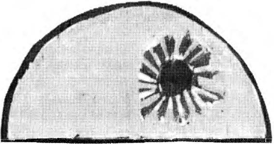
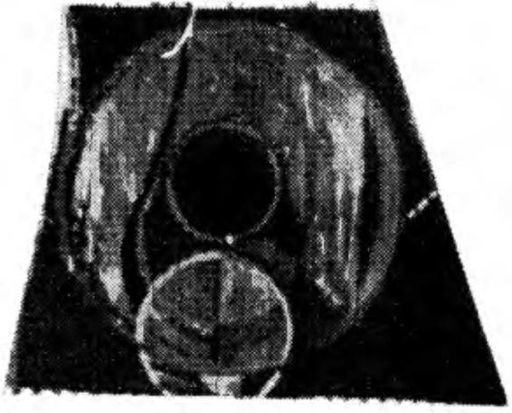

e ? plandığımız
" d i ye
da,
sordu
"Neler
Neslor. " o
S li z
ik iniz neredeydiniz dün?"
La Gorda' nın olup bitenler h akkında hiç k im seye bir şey
siiylemememiz gerektiği konusundak i uyarı s ı aklımdan uçup
gitmişt i . Onlara yakınlardaki kente gitt i ğ imizi ve orada son
dncce g izeml i bir ev gördüğümüzü anlatt ım.
Orada b u lunan herkes b i r anda irkildi. B ir dalgalanma
ı ıldıı, birbirlerine baktılar, daha sonra da, b ir açıklama yap
ı ı ıa.�ını isterm i şçesine, bak ışların ı l a Gorda ' ya çevi rdiler.
"Nasıl b i r evdi bu?" diye sordu Nestor.
La Gorcla ağzımı açmama fı sat vermeden atı ldı . Telaşl ı ,
1 11·1\·dcyse tutarsız b i r b iç i m de konuşmaya başladı. A k l ın a
ı·sı igi gibi konuştuğu düpedüz ortadaydı. Hattta konuşurken
;11 ;ıy;ı Mazatec dilinde sözcükler ve deyişler bile katıyordu.
l l;ıııa fı rlattığı k açamak bakışlarında artı k d i l im i tutmam• ge-
1 1·k 1 igini belirten sessiz bir yalvarma okunuyordu sank i .
60
ÖTEKİ BENLİ K
" Ya gördüğün rüya, Nagual?" diye sordu bana, e n sonunda bir yolunu bulup kurtulan birinin rahatlayışı içinde.
" Yaptığın her şeyi bilmek isteriz. B unu bize anlatmanın bizim için son derece önemli olduğunu düşünüyorum."
Elinden geldiğince kayıtsız davranmaya çalışarak kula
ğıma eğildi ve Oaxaca' da yaşadıklarımızdan sonra, onlara
gördüğüm rüyayla ilgili her şeyi anlatmam gerektiğini söyledi.
"Bu sizin için neden bu kadar önemli'/ " diye sordum
yüksek sesle.
"Sanırım sona çok yaklaştık," dedi la Gorda ciddi bir ses
tonuyla. "Bize söyleyeceğin ya da yapacağın her şey artık
bizim için son derece önem taşı yor."
Onlara gerçek rüyam olduğuna inandığım olayları anlatmaya başladım. Don Juan bana deneyimlerin üzerinde gerektiğinden fazl a durmanın hiçbir yarar sağlamayacağın ı söylemişti. Bana pratik bir yol öğretmişti; söylediğine göre,
aynı görsünün üç kez tekrarlanması halinde çok dikkatli olmam gerekiyormuş; yoksa, bunun ikinci dikkati kurma yolunda acemice bir girişimcinin ilk basamağı atlamasından öte bir anlamı olmazmış.
Bir kez rüyamda sıçrayarak uyandığımı ve yataktan düştüğümü görmüştüm, ama bir de bakmıştım ki bedenimin hilla
yatakta uyuyor. Kendimi uyurken izledim, rüyada olduğumu
anlayacak ölçüde özdenetime sahiptim. Don Juan' ın ani sarsıntılara ve şaşkınlığa uğramamam için verdiği öğütlerine
uyarak ihtiyatlı davrandım. Don Juan, rüya görücünün serinkanlı olması gerektiğini söylerdi. Rüya görücü, uyuyan bedeniyle uğraşmayı bırakıp, odadan dışarı çıkmalıymış. N asıl olduğunu anlayamadan birdenbire kendimi odanın dışında
bulmuştum. Kendimi orada bulmamın bir anda gerçekl eşti
ğinden eminim. Dışarda, oda kapısının önünde ayakta durdu
ğumda fark ettiğim ilk şey, holün ve yukarı çıkan merdivenin devasa boyutlarda olduklarıydı. Gerçek yaşamda son derece sıradan olan bu yapıların bana böylesine büyük görün-
ÖTEKİ BENLİÔİN SANKİ ANILARI
6 1
meleri beni gerçekten ü rkütmüştü o gece: hol, bir k il ometreden daha uzun görünüyordu ve merdivenin on altı basamağı
vardı .
Algıl adığım b u devasa uzak l ık lar iç inde nas ı l yol alaca
ğımı bilemiyordum. Ne yapacağım ı b ilemez bir halde kalakalmıştım, dah a sonra b i r şeyler beni h arekete geç i rm i ş t i .
Ancak yürümüyordum. Adımlarımı h issetmiyordum. B irdenbire kendi m i merd ivenin parm ak l ı k l arına tutunurken bulmuştum. El lerimi ve kollarımın dirseklerime kadar olan bölümünü görebiliyordum, ama onl arı h issederniyorcluın. Anladığırn kadarıy l a kendi kas s is tern irnden tümüyle farklı bir güçle tutunuyordum parmaklıklara. Merdivenlerden aşağı inmeye çal ıştığımda ela aynı şey olınu�tu. Nasıl yürüyebilece
ğimi b ilnıiyorclum. Tek bir adım bile atamı yordum . Sanki
bacakl arım birbirine yapışmış gibiydi. Eğildiğimde bacaklarıım görebi l iyordum, ama onları ne ileriye ne yana ne de yukarı doğru oynatab i liyordum. En üst basamakta kaskatı kes i lmiş gibi duruyordum . Kendimi hacıyatmaz gibi h issediyordum.
Yürüyebilmek için olağanüstü bir çaba harcadım ve hantal bir top gibi basamak l ardan aşağı doğru zıpladım. Zemin
k ata inebilene k adar canım çıktı, halimi başka türlü arılata
ıııam, görsümü sürdürebilmek, onun olağan bir rüyanın kaypak imgeleri içinde çözülüp gitmesini engelleyebilmek iç in
iizel bir özen göstermem gerekiyordu.
Dış kapıya ulaşabildiği mde, kapıyı açamadım. B ütün çabalarım boşunaydı ; o anda oclamclan, kapı açıkmı ş gibi kayar;ık süzüldüğümü anımsadım. Yapımım gereken tek şey o kayma duyumunu yeniden anımsarnaktı, bunu yaptığım gibi
kendimi sokakta buldum. Sokak karanlık görünüyordu�
kurşuni, göz gözü görmez bir karanlık��İl k anda dikkatim i
,_-eken şey, tam önümde, göz h izamda uzanan devasa bir ışık
l ıavuzu oldu. B unun bir sokak l ambası olabileceği sonucuna
vardım; bu sonuca algı yolu i le değil, fikir yürüterek varmış
ı ı ııı, çünkü tam köşede, altı metre yükseklikte bir sokak lam-
62
ÖTEKİ B ENLİK
basının bulunduğunu biliyordum . O anda, herhangi bir nesnenin yukarıda mı aşağıda m ı , sağda mı solda mı olduğunu
kestirebilecek h a l de olmadı ğımı anladım . Çevremdeki her
şey burnumun d i b indeymi ş gibi görünüyordu. A l g ılarım ı ,
gündelik yaşamdaki gibi düzenleyebilecek herhangi bir düzenekten yoksundum . Her şey orada, tam önümde uzanıyordu, ve ben görüntüleri zihnimde normal haliyle algılayabilme becerisinden yoksundum.
Ş aşkınlık i çinde sokakta ö ylece durdum; ta k i havada
yükseld i ğ i m i hisse d i nceye kadar. Elektrik d ireğine tutundum. Esen ş iddetli bir rüzgar beni yukarı kaldırıyordu. Direk
ü zerinde sokağı n adını i yice görebilene kadar yüksel d i m :
Ashton.
Ayl ar sonra, kendimi bir kez daha rüyada, u yuyan bedenime bakarken bulduğumda, artık neler yapmam gerekti ğ ini
biliyordu m . Olağan rüya s ıras ı n da, bu süreç iç inde gerek l i
olan tek unsurun istenç olduğunu öğrenmiştim artık; bedenin
c ismaniliğinin h erhangi bir önemi yoktu. Bu, rüya görenin
dev imini ağırlaştıran b i r anıydı y alnızca. H iç v akit kaybetmeden kayarak odadan d ışarı ç ıktım , ç ünkü hareket etmek
için kap ı y ı açmak ya da yürümek gibi eylemlerde bulunmam
gerekmiyordu. H o l ve merdiven bu kez, ilk görüşümde o ldu
ğu gibi devas a değildiler. Kolaylıkla, kayarak dışarı ç ıktım
v e i stencimle üç blok öteye ilerledi m . Işıkl arın son derece
rahatsız edici görüntüler oluşturmaya devam ettiklerinin farkına vard ı m . G özlerimi onlara d iktiğimde, ölçülemeyecek
boyutl arda ı şık h avuzları oluşturuyorlard ı . Rüyanın d i ğer unsurlarıysa kolayca deneti m altına alınabili yordu . B inalar ola
ğ anüstü ölçüde ,bü yüktüler, ama garipsemiyordurn. N e yapacağımı düşünmeye koyuldum. Daha sonra, oldukça rastlantısal bir biçimde, nesnelerin ü zerine gözlerimi d ikmeden, her zamanki gibi onlara yalnızca göz ucuyla bakacak o lursam,
algılarımı düzene sokabilceeğimi ayrımsadım. D iğer bir dey i şle, don Juan ' ın öğütlerini harfiyen yerine getirecek ve rüyamı olduğu gibi kabullenecek olursam, gündelik yaşamımın
ÖTEKİ B ENLİÔİN SANKİ ANILARI
63
tanıdık algılarından yararlanabi lecektim. Kısa bir süre sonra
görünüm, tam olarak tanıdık olmasa bile, denetim altına alınabilir bir n itelik kazandı.
Benzer bir rüyayı bir sonraki görüşümde sokağın köşesinde yer alan, en sevdiğim kafeye gittim. Bu yeri seçmemin
nedeni, sabahı n çok erken saatlerinde oraya gitmeyi alışkanlık haline getirmiş olmamdı. O saatte orada, gece vardiyasında çalı ş an garson k ızları görd ü m ; tezgfth ı n kenarında bir grup insan yemek yiyordu ve sağda, tezgfthın en ucunda tiıhaf bir tip v ardı , her gün Los Angeles Üniversi te s i 'nin çevresinde turlarken gördüğüm bir adam. B ana gerçekten bakan tek kişi bu adam oldu. İçeriye girdiğim an varl ığımı h issetmiş gibiydi. Döndü ve gözünü bana dikti.
Aynı adamı birkaç gün sonr a, sabah erkenden, uyanık
olduğum bir saatte bir kez daha gördüm. Yüzüme baktı ve
sanki beni tanıdı. Onunla konuşmama fırsat vermeden, deh
şete düşmüş gibi koşarak uzakl aştı .
Aynı kafcye bir kez daha geldim, ama bu kez rüyonurı
seyri değişmişti. Caddenin karşı tarafından restoranı izlemeye koyulmu ştum ki, görüntü değişti. Artık tanıdık binaları
görmüyordum. B unun yerine eski çağlardan bir manzarayla
karşı karşıyaydı m . Gece de değildi. Güneş pırı l pırı l parl ıyordu ve önümde uzanan gür yeş i l l iğin bürüdüğü bir v ad iye
bakıyordum . B ataklık gibi bir yerdi burası ve her yanı koyu
yeşi l renkli, kamışa benzer bitkiler kaplamıştı . Yanımda, iki
buçuk üç metre yüksekliğinde düz bir kaya parçası vard ı .
Üzerinde kocaman, kı lıç gibi sivri dişli bir kaplan oturuyordu. Taş kesilmiştim. Uzun bir süre gözlerimizi dikip birbirimize baktık. H ayvan olağanüstü büyüktü, ama görünümü ürkütücü değildi. Muhteşem bir baş ı , koyu bal rengi gözleri, kocaman pençeleri, devasa bir göğüs kafesi vard ı . B eni en
çok etkileyen, kürkünün rengi oldu . Tüm bedeni koyu kahve,
neredeyse çikolata rengindeydi. Kürkünün rengi bana kavrulmuş kahve çekirdeklerini anı msattı, ama daha parl aktı; şa
şırtıcı derecede uzun, kirli ya da k arışık olmayan , tüyleri var-
64
ÖTEKİ BENLİK
dı. Bir pumanın, bir kurdun ya da bir kutup ayısının postuna
benzemiyordu. Daha önce hiç görmediğim bir şeydi.
O günden sonra, düzenli bir biçimde aynı kaplanı görür
oldum. Ortam kimi zaman bulutlu ve serindi. Vadiye yağmur
yağdığını görüyordum; yoğun, bereketli yağmurlar. Kimi zaman da vadi ışığa boğulmuş oluyordu. Kılıç gibi keskin dişli
başka kaplanlar da görüyordum sık sık. Onların kendilerine
özgü gümbürdeyen kükremelerini işitiyordum-bu sesler
içimi fena halde bulandırıyordu.
Kaplan bana hiç dokunmadı. Üç beş metre uzakl ıktan
bakışıyorduk. Ne yapmaya çalıştığını anlıyordum. Bana özel
bir nefes alma biçimi gösteriyordu. Sonunda rüyamda belli
bir noktaya ulaştım; nefesimi kaplanınkine benzetmede o
denli başarılı oldum ki bir kaplana dönüşmeye başladığımı
hissettim. Çömezlere, rüya görmemin somut bir sonucu olarak bedenimin daha güçlü kaslara kavuştuğunu söyledim .
Öykümü dinledikten sonra Ncstor, şaşkınlık içinde, onl arın rüyalarının benimkinden son derece farklı olduğunu
belirtti . Hepsinin ayrı ayrı görevleri olu yordu rıi yalarr nda.
Nestor'un görevi insan bedenine musallat olan hastalıklar
için sağaltım yöntemleri bulmaktı; Benigno 'nun görevi insanı ilgilendiren her konuda çıkarımlar, öngörüler, çözümler
geliştirmekti; Pablito 'nunkiysc inşa etmenin yollarını araştırmaktı. Nestor, tıbbi bitkilerle uğraşmasının bu görev !erden
kaynaklandığını söyledi . Benigno 'nun kehanet gücü, Pablito ' nun da marangozluk becerisi vardı. Nestor, o güne değin
rüyalarını ancak yüzeysel olarak algılayabildiklerini ve bu
konuda aktarabilecekleri somut hiçbir şeyin bulunmadığını
söyledi.
"B izim çok ilerlemiş olduğumuzu sanıyor olabilirsin,"
diye devam etti, "oysa değiliz. B izim ve kadınların yerine
her şeyi yapan Genaro ile Nagual' dı. B iz kendi başımıza bir
şey yapabilmiş değiliz henüz."
"Anladığım kadarıyla N agual seni farklı biçimde yeti�tinniş," dedi Benigno ağır ağır ve dikkatle. "Sen bir kaplan-
ÖTEKİ BENLİÔİN S ANKi ANILAR!
65
d ı ı ı ve y ine bir kaplana dönüşeceksin. N agual ' a da böyle old ı ı . O bir kargaydı ve yine bir kargaya dönüştü.''
" Mesele, artık böyle bir kapl anın olmaması," dedi Nesl ı ır. " Böyle bir durumda ne olacağını h içbirimiz bilın iyonıL. "
Başını çev irerek orada bulunan lıcrkcs i kastettiğini bel ı ıl ı i.
"Ben ne olacağını biliyorum," dedi la Gorda . .. Nagual
doıı J uan Matus bu duruma huya/er riiyası derdi. Hiddetli ve
vok edici olmadığımız için hiçbirim izin hayalet riiwısı gör
ı ı ınliğimizi söylemişti . Bunu kendisi de hiç deneyimlemedi.
Siiy lediğine göre; her kim k i böyle rüyalar görür. hayaletle-
1 1 1 1 yardımını ve dostluğunu almay a ela yazgılıd ır.
" Bu ne anlama geli yor, Ciorcl<ı'1" d iye sordum .
"Senin bizler gibi olmadığın anl<ı ıııııı<ı geli yor," ded i sık ıııl ıl ı bir sesle.
La Gorda çok huzur suz görünüyordu. Ayağa kalktı ve
ı ıdaııın içi nde üç dört volta attıktan sonra tekrar oturdu.
Ortalığı bir sessizl i k kaplad ı . .Josefina anlaşılınaz bir
·,.qler m ırı ldand ı . O da çok gerg in görü n ü y ordu . La Gorda
1 111a sarı ldı ve eli yle sırtını okşayarak yatı�t ırmaya ç alı ştı.
"Josefina sana Eligio hakk1 11da bir şeyler söylemek istivor." dedi bana.
Herkes tek bir söz söylemeden , meraklı gözlerle Joscfi
ı ı :ı ' ya baktı .
La Gorda sözlerini sürdürdü, " E l igio dünyas1111 clcği ştir
ı ı ıl'sine karşın hftlfı içimizden b iri. Josel'ina da sürekli konu
·1ı ıyor onunla. "
Diğerleri birdenbire kulak kesildiler. Önce birb irlerine,
"nııra bana bak t ı lar.
"Rüyada buluşuyorlardı , " dedi la Gorda duygusal bir ses
1 t ı ı ı u y l a .
.Josefina iç ini çekti . S i nır krizi geç ir i yor gibi y d i. Tüm
i ıl'dcnini bir titreme kaplam ıştı. Pablito yerele onun üzeri ne
ı ı ı ; ı ı ı d ı ve diyafram ı ndan der i n derin nefes alırken onu da
66
ÖTEKİ BENLİK
kendisiyle birlikte nefes almaya zorladı.
"Ne yapıyor?" diye sordum la Gorda' ya.
"Ne mi yapıyor! Görmüyor musun?" d iye yanıt verdi
sert bir sesle.
Fısıldayarak onun Josefina' yı rahatlatmak istediğinin
farkında olduğumu, ama bu yöntemi daha önce görmediğimi
söyledim. La Gorda, Josefina ' ya enerj i vermek üzere Pablito' nun, erkeklerin enerjilerinin yoğunlaştığı bedeninin orta
bölümünü, Josefina'nın rahminin, yani kadınların enerji depoladıkları bölgenin üzerine yerleştirdiğini anlattı.
Josefina doğrul arak bana gülümsedi. Tümüyle rahatlamış görünüyordu.
"Eligio'yla sürekli buluşuyorum," dedi. " Her gün bekliyor beni."
"Nasıl olur da bunu bize söylemezsin?" diye çıkıştı Pablito.
"Bana söyledi," diye araya girdi la Gorda ve Eligio 'nun
aramızda bulunmasının hepimiz için ne anlama geldiği konusunda uzun bir nutuk çekti. Eligio 'nun sözlerini açıklamak
için benden bir işaret beklediğini sözlerine ekledi.
"Lafı dolandırıp durma, kadın ! " diye bağırdı Pablito.
"Bize onun ne söylediğini anlat."
"Sana söylenmedi ki! " diye bağırdı la Gorda.
"Kime peki?" diye sordu Pablito.
"Nagual ' a," diye bağırdı la Gorda, parmağıyla beni göstererek.
La Gorda, sesini yükselttiği için özür diledi. Eligio 'nun
söylediklerinin son derece karmaşık ve gizeml i olduğunu,
kendisinin bu söylenenleri bir türlü toparlayamadığını belirtti.
"Sadece dinledim onu. Yapabildiğim tek şey bu oldu :
onu dinlemek," diye devam etti.
"Yani sen de mi buluşuyorsun Eligio ' yla?" diye sordu
Pablito. Sesinde, öfke ve merak b irbirine karışıyordu.
ÖTEK İ BEN LİÔ İN SANKİ AN ILARI
67
"Evet, öyle," diye yanıt verel i l a Gorda fıs ı ldar gibi. "Bu
konuda konuşamazdım çünkü onu beklerncm gerek iyord u . "
B e n i gösterdi ve sonra d a her i k i el iyle itti ben i . B ir an
i\· in dengemi y itirdim ve yana doğru sendeledi m .
"Ne o luyor? N e y aptığını sanıyorsun?" d i y e sordu Pabl il ı ı öfke içinde. K ızılderil i ler aşklarını böyle mi gösteri rler?"
La Gord a ' ya dönd ü m . S us m am i ç i n dudakl arı y l a bana
l >i r i şaret verel i .
"Eli gio, senin N agual olduğun u . a m a bize göre olmadı
)'. ı n ı söylüyor, " eledi J osefina.
Odaya bir ölüm sessizli ğ i çöktü. Josefi n a ' n ın söylediği
ı ıl' bir anlam verem i yordu m. Biri leri n i n bunu açıklaması ge
ıL· k i yordu .
"Rah atladın m ı şimdi?" d iyerek dürttü ben i la Gorda.
Onlara öyle ya da böyle herhangi bir fi krim i n olmadığı
ı ı ı söyl edim. Tıpkı parmağı ağzında k alan çocukl ara benziy orl ardı . La Gorda, utancından yerin dibine geç m i ş g i b iydi.
Nestor ayağa kalktı ve l a Gorda' ya döndü. Ona Mazatec
d i l i nde b i r şey ler söyled i . Sesinde buyurgan, azarl ayıcı b i r
i l l i ! vard ı .
İ spanyolca olarak, "B ize bildiğin her �eyi anlat , Gorcla."
ı l ıye sürdürdü konu şmasını. "Böylesine önem l i bir �eyi kcn
ı l ıııe saklamaya, bizimle eğlenmeye hakkın yok. "
La Gorda hiddetle kaqı ç ı ktı söylenenlere. B il di klerin i
k rnd i s i ne saklad ı ğ ın ı , ç ü n k ü Eligi o ' nun kendi s inden böyle
ı�, t l·d iğini belirtti. J osefina onaylarcas ına başını salladı.
"Eligio bunları sana mı yoks a J osefi n a ' y a mı söyledi ? "
ı l ı Vl' sordu Pablito.
" İkimiz birl ikteydik," dedi la Gorda fıs ı l tıyla.
" Yani sen ve .Josefi na birlikte riiyo gijriiyordunuz ! " d i ye
l ı;ıyk ı rdı Pablito, afal l ayarak.
Sesindek i büyük şaşkınlık, ötekiler arasında y ay ı l an şok
· Lı l gasıyla uyum içi ndey d i .
" El igio ikinize t a m olarak n e söyledi ? " d i ye sordu Pab l i-
68
ÖTEKİ BENLİK
to, kendisine gelir gibi olduğunda.
"Nagual ' a sol yanını anımsayabilmesinde yardımcı olmam gerektiğini söyledi," dedi la Garda.
"Sen neden söz ettiğini anlıyor musun?" diye sordu hana
Nestor.
Anlamama olanak yoktu. Onlara, bunu ancak kendilerinin bilebileceğini söyledim. Ancak kimseden çıt çıkmıyordu.
"Eligio Josefina 'ya şu anda anımsayamadığı başka şeyler de söylemişti," dedi la Garda. "Yani gerçekten kötü durumdayız. Eligio senin kesinlikle Nagual olduğunu ve bize yardım etmen gerektiğini, ama bize göre olmadığını söyledi.
B izi gitmemiz gereken yere ancak sol yanını anımsadıktan
sonra götürebilecekmişsin."
Nestor babacan bir tavırla Josefina'ya döndü ve El igio 'nun söylediklerini anımsatmaya çalıştı ona. Bu sözlerin
ne anlama geldiğini anımsamam konusunda beni zorlamamıştı, çünkü hiçbir şey anlamamıştım.
Josefina, üzerinde büyük bir baskı varmış gibi yüzünü
buruşturdu ve kaşlarını çattı. O anda buruşmuş bir bez bebe
ğe benziyordu. Büyülenmişcesine onu izledim.
"Yapamıyorum," dedi sonunda. "Benimle konuşurken
neden söz ettiğini anlıyordum, ama şu anda bunları söyleyebilecek durumda değilim. Bir türlü anımsayamıyorum."
"Hiçbir şey mi hatırlamıyorsun?" diye sordu Nestor.
'Tek bir sözcük bile mi?"
Dilini dışarı çıkarttı, başını iki yana doğru salladı ve o
anda bir çığlık attı.
"Hayır, yapamıyorum," dedi , kısa bir süre sonra.
"Ne tür rüyalar görüyorsun, Josefina?" diye sordum.
"Bildiğim tek tür rüyayı," diye yanıt verdi ters ters.
" Kendi rüyamı nasıl gördü ğ ü m ü anlattım , " ded i m .
"Şimdi de sen anlat."
"Gözlerim i kapattığımda o duvarı görüyorum," ded i .
"Sisten bir duvar sanki . Eligio beni orada bekliyor. Beni du-

ÖTEKİ B EN LİÔİN SAN Kİ ANILARI
69
varı n ötesine geç iriyor ve sanırım bana b ir şeyler gösteriyor.
Ne olduğunu b ilm iyorum, ama birl ikte b irtakım şeyler yapıyoruz. Daha sonra beni duvarın önüne geri getiriyor ve bırakıyor. Döndüğüm gibi de gördüklerim i unutuyoru m . "
" L a Gorda ' yla birlik te gitmeyi nası l başardınız?" diye
sordum .
"Eligio bana o n u da getirmemi söyledi," ded i. "İk imiz
birl ikte l a Gorda ' yı bekledik ve o kendi rüyasına girdiğinde
onu kaptık, o duvarın arka tarafına çekt ik. İki kez yaptık bu
ıı U."
"Nasıl kaptınız onu?" diye sordum.
"Bilmi yorum � " diye yanıt verdi Josefina. "Ama seni de
bekleyeceğim ve rüya gördüğünde seni ele kapı p götürece
�im, bunu o zaman öğreneceksin."
" Herhangi birini kapıp götürebilir mis in?"
"El bette , " ded i gülümseyerek. " A ncak bunu yapm am,
ı; li nkü erkimi boşa harcamış olurum. La Gorda ' y ı , E l i g i o
onun benden daha mantıkl ı olduğunu, bu nedenle el e söyleyeceklerini ona anl atmak istediğini söylediği için kapıp gö
ıiirmüştüm."
"O halele Eligio sana ela aynı şeyleri söyleı11 İş olmalı,
< lorda" dedi Nestor, alışık olmadığım bir sertl ikte.
La Gorda olağandışı bir tavırla başını eğdi , ağzının iki
k ı yısı açıldı, omuzlarını silkti ve ellerini başının üzerine doğiLI kaldırdı.
"Josefina biraz önce sana olanl arı anl attı," dedi. Benim
;ııııms ayabilmem olanaksız. Eligio fark lı bir h ızda konuşuyor. O konuşuyor, ama benim bedenim onun söylediklerin i
aııl ayamıyor. Hayır, hayır. B edenim anımsayamıyor maale
-;d. Nagual ' ın anımsayacağın ı ve bizleri gitmemiz gereken
vne götüreceğini söylediğini biliyorum. B ana başka bir şey
'i iyleyemedi , çünkü anlatacak çok şey v ardı, oysa zamanı-
1 1 1 1 1. çok dardı . K im o l duğunu anımsayamadığım b i ri n i n
ı ı 1.dl ikle beni beklediğini söyledi."

70
ÖTEKİ BENLİK
"Tüm söyledikleri bunlar mıydı?" diye diretti Nestor.
"Onu ikinci kez gördüğümde, bana eğer gitmemiz gereken yere varmak istiyorsak, hepimizin eninde sonunda sol
yanımızı anımsam ak zorunda olduğumuzu söyledi. Ancak
ilk önce onun anımsaması gerekiyor. "
Parmağı ile beni gösterdi ve daha önce de yaptığı gibi
beni itti. Darbenin şiddetinden bir top gibi öne yuvarlandım.
"Neden yapıyorsun bunu, Gorda?" diye sordum, biraz
sinirlenmiştim.
"Anımsaman için sana yardımcı olmaya çalışıyorum,"
dedi. " Nagual Juan M atus bana, arada bir seni sarsmak için
böyle itmek gerektiğini söylemişti."
La Gorda, hiç beklemediğim bir anda bana sarıldı.
"Yardım et bize, Nagual," diye yalvardı. "E�er yardım
etmezsen mahvoluruz."
"Gözlerimden yaşlar boşanmak üzereydi. B ulundukları
açmazdan dolayı değildi bu; içimde bir şeylerin kıpırdadığını
hissediyordum . Onunla b irlikte o kente gittiğimizden bu yana içimdeki bu kıpırtı dışarı çıkmak istercesine sürekli büyüyordu.
La Gorda'nın yalvarmaları kalbimi parçalıyordu. O anda
yüksek tansiyondan kaynaklandığını tahmin ettiğim bir krize
daha yakalandım. Tüm bedenimi soğuk bir ter kapladı ve daha sonra m idemde kasılmalar başladı . La Gorda büyük bir
şefkatle baktı bana.
B ir bulguyu açıklamadan önce beklenmesi gerektiği konusundak i i lkesine sıkı sıkıya bağlı olan la Gorda, Oaxaca' daki birlikte görmemiz üzerine konuşmaya hiç yanaşmadı. Günler boyu uzak durdu ve tamamen ilgisiz davrandı.
Hastalığım konusunda bile tek bir söz etmedi. Diğer kadınlar
da. Don Juan, içimizdekileri dışa vurmak için en uygun zamanı beklemek gerektiğini vurgulardı hep. La Gorda'nın neden böyle davrandığını anlayabiliyordum, ama beklemek ko-
ÖTEKİ BENLİ Ô İN SANKİ AN ILARI
7 1
ııusundaki ısrarını rahatsız edici buluyordum ve beklenti leri
ın ize ters düştüğünü düşünü yord u m . O n l arla çok uzun b i r
s [ire b irl ikte kalamayacaktım, b u nedenle hepim i zin bir araya gelip bütün b ildiklerimizi paylaşmam ı z gerektiğini söyled i m . Kararından vazgeçmeye n i yet i yoktu .
''Bek l ememiz gerekiyor," ded i . B i r çözüm bu lhbi lıneleri
için bedenlerimize bir �ans tanımalıyız. Görev i m iz a111msa
ıııaktır, zihinlerimizle değ i l , bedenlerim i zle anımsamak. Bu
ııu herkes b i l ir. "
Mera k l ı gözlerle bana bak t ı . Sank i , ben i m d e görev i anl ad ığ ı ma dair b i r i ş aret arıyord u . Onların arasına d ışarı dan
katıldığı mı , şaşkın bir h alde bulunduğumu h i ssett i m . B e n
yalnızdı m , oysa onlar birbirlerine destek o l ab i li yorlard ı .
" B u , savaşç ı l arın sessizl i ğ i , " dedi gülerek ve gönül a l ı c ı
lıir tonla ekled i , ''Bu sessizlik başka konularda d a koııuşaınay ız anlamına gel mi yor. "
"Belki de i nsan biçiminin y i t i rilmesi konusundaki tart ı ş
ı ı ı alanmıza geri dönebi l iriz," dedi m .
Gözlerinde rah atsız olduğunu beli i eden b i r i fa d e bel ird i .
( >na, beni m için her zaman , öze l l i k l e kavramlar söz konusu
ı ılduğunda, anlam ın açı k l ığa kavuşturulmasının önem l i olclugunu anl attım uzun uzun.
''B ilmek i sted i ğin tam olarak ned i r?" d iye sordu.
"B ana söylemek isteyebi leceğin her şey," ded i m .
" N agual b a n a , insan biçim i n i n y i t i rilmesinin özg ü rl ü k
get irdiğini söyle m i �ti," eledi . " B u n a i n anıyoru m . A n c a k b u
ii1.gi.irlüğü duyums�tyabi lmi� değilim, yan i ş imd i l ik . "
B ir anlı k sessizl ik oldu . Kuşkusuz söyledikler i ne tepki
ı ı ıi ölçüyordu.
"Ne tür b ir özgürlük b u Gorda'?" diye sordum.
"Kendini anıın sayabi l me özgürlüğü," ded i . "Nagual, i nsaıı biçiminin yitirilmes i n i n bir yaya b�nzedi ğ i n i söylemişti.
1\. i� iye anım s ayabi lme özgürlüğü verir ve bu da kişiyi daha
ı iı.gür k ı lar."

72
ÖTEKİ B E N LİK
"Sen neden hissedemedin bu özgürlüğü?" diye sordum.
Ağzında dilini şaklattı, omuz silkti. Ya aklı karışmıştı,
ya da daha fazla konuşmak istemiyordu.
"Sana bağlanmış durumdayım," dedi. "Anımsayabilmek
için insan biçimini yitinn edikçe, benim özgürlüğün ne oldu
ğunu bilebilmem olanaksız. Fakat belki de sen anımsayamadan insan biçimini yitiremeyeceksin. Kaldı ki, bizim bu konu üzerinde konuşmamamız gerekiyor. Neden Genarolar ' ın yanına gitmiyorsun?"
Çocuğuna dışarı çıkıp oynamasını söyleyen bir anne
edasıyla söylemişti bunları. Ancak, bu tavrına hiç kırılmadım. Oysa, bunları söyleyen bir başkası olsaydı tavrını kolaylıkla küstahlık ya da küçümseme diye yorumlayabilirdim.
Onunla birlikte olmaktan zevk alıyordum, fark da buydu.
Pablito, Nestor ve Benigno' yu Genaro'nun evinde tuhaf
bir oyun oynarken buldum. Pabl ito, yerden bir buçuk metre
yükseklikte, koltuk altlarından uzanarak göğsünü kavrayan
deri kayışa benzer bir şey içinde, havada asılı duruyordu.
Bedenini kavrayan kayış, kalın deri bir yeleğe benziyordu.
Daha dikkatli baktığımda, Pablito ' nun aslında kayışın üzerinden tıpkı üzengi gibi ilmikler halinde aşağı doğru inen kalın şeritlerin üzerinde, ayakta durduğunu fark ettim. Çaprazlam asına durarak çatıya destek sağlayan, kalın yuvarlak bir sütunun üzerine geçirilmiş iki halatla odanın ortasından aşa
ğı doğru asılıydı. H alatların her b iri Pablito 'nun omuzları
üzerinden, metal birer halkayla kayışa bağlanmıştı.
Nestor ile B enigno b irer halata asılmışlardı. Yüz yüze
dikiliyor, kavramış oldukları halatları yukarı doğru çekerek
Pablito' nun havada asılı kalmasını sağlıyorl ardı. Pablito,
yerden yukarı doğru yükselen, rahatça tutabileceği aralıklarla konmuş, ince uzun iki direği sıkı sıkı tutuyordu. Nestor
Pablito'nun solunda, Benigno'ysa sağındaydı.
Oyun şiddetli bir rekabet içeriyordu-halatı çekenlerle
havada asılı duran kişi arasında süren acımasız bir savaş.
Odaya girdiğimde duyabildiğim tek ses, Nestor 'la Be-
ÖTEKİ B EN LİGİN S A N Kİ AN ILARI
73
ı ı igno 'nun derin derin solumaları oldu. Kol v e boyun kasları
lıarcadıkları yoğun güçten dolayı ş i ş m i şt i .
Pab l i to, her i k i s i n i d e izl i yor, b i r b i rine b i r d i ğerine çevi
ıı yordu gözlerin i . Üçü de kendilerini oynadı k l a rı oyuna öyk.s i ne k aptırını ş l ardı ki, ben i m v arl ığımı fark eth1ediler bile;
va da fark etm i ş olsalar bile, beni selaml am ak için konsantrasyonlarını bozacak h alde deği llerd i .
N estor ' l a Benigno, tam b i r sessizlik i ç i nde on o n beş dak i ka kadar birbirl erine baktılar. Daha sonra N e stor, i p i bırak ı yorm u ş g ib i yapt ı . B e n igno y u t m a d ı bu n u m aray ı , a m a l 'ablito kandı . S o l e l i d i re ğ i daha s ı k ı kavradı v e daha s ı k ı tut ı ııımak için d i re ğ i n üzerinde d uran ayakları n ı daha sağlam
lıastı. Benigno, hamle yapmak için Pablito ' nu n e l i n i gevşett ığ i ana kadar bekledi ve tam o anda h alatı tüm gücüyle çek
ı ı .
Benigno ' nu n çek i ş i , Pab l i to ' y l a N estor ' u gafi l avlaınıştı.
l kn igno ti.im ağırlığıyla halata asıldı. Nestor etkisiz duru m a
ı •.d d i . Pabl ito denges i n i yen i den sağlayabi lmek i ç i n t ü m gül· i iyle uğraştı ama n afile. Ben igno oyunu kazanmıştı.
Pablito kayış l ardan çıktı ve yanıma geld i . Ona oynadık
L ı rı bu olağandışı oyun üzerine soru l ar sordum. Her nede nse
k oı ıuşmak istemedi . Aletleri kaldırdı ktan sonra Nestor ' l a Be
ı ı ı gııo da yanım ıza geldiler. Nestor, oyunun Pabl ito tara fın
ı laıı tasarlandığın ı söyled i . Belirl liğine göre Pabl ito, riiym1111
v a p ı s ı n ı bulduktan sonra bunu b i r oyun b i ç i m inde tasarla
ı ı ı ı ş t ı . Önceleri i k i k i ş i n i n b i rden, aynı zamanda kasl a rı nı
ı • ı iç lendirmesi için kullanı lan b i r araçmış. A ncak, daha sonra
l knigno ' nu n rüyası onlara oyuna nasıl g i r ileceği n i göste r
ı ı ı i ş . Buna göre , oyuna katılan her üç k i ş i önce kasları nı gcr
ı · ı ı ı leştiriyor ardından, k i m i zaman saatler s ü re n b i r h azırlık
\tirccine girerek, görsel yeti l erini keski n lqti ri yordu.
"Ben igno bu sürec i n bedenle r i m i z i n anı m samasına y ar
ı l ı ı ııc ı o l d u ğ u n u d ü ş ü n ü yor. " d i ye s ü rd ü rd ü kon u ş m a s ı n ı
NL'.stor. ''Örneğin Gorda, oyunu gerçekten çok tuhaf b i r bi
\ ı ı ı ıdc oynuyor. H an g i konumda olur s a olsun sonunda k aza-
74
ÖTEKİ BENLİK
nan mutlaka o oluyor. Benigno, onun bedeninin anımsayabildiği için kazandığını düşünüyor."
Aralarında bir sessizlik yasasının bulunup bulunmadığını sordum . Güldü ler. Pabli to, Gorda ' nın N agual Matus ' a
özendiğini söyledi. E n anlamsız ayrıntılara kadar büyük bir
özenle taklit ediyormuş onu.
"Yani, geçen gece olanlar üzerine konuşabilir miyiz')"
diye sordum. Gerçekten şaşırmıştım, çünkü la Gorda şiddetle
buna karşı çıkıyordu.
''Bizim için fark etmez," dedi Pablito. "Nagual sensin� "
"Benigno burada tuhaf, gerçekten çok tuhaf bir şey
anımsadı," dedi Nestor, bana bakmadan.
"Ben kendimce bunun karmakarışık bir rüya olduğuna
inanıyorum," dedi Benigno. "Ancak Nestor böyle olmadığını
düşünüyor."
Sabırsızlık içinde bekledim. B ir baş işaretiyle devam etmelerini belirttim.
"Geçen gün senin ona, yumuşak toprakta iz sürmeyi öğrettiğini anımsadı," dedi Nestor.
Söyledikleri o kadar saçma geliyordu ki gülmek istedim,
ama üçü de yalvaran gözlerle baktılar bana.
"Saçma bu," dedim.
"Her neyse, benim de böyle bir anımın olduğunu anlatmam gerekiyor sana," dedi Nestor. "Beni kayalık bir yere
götürdün ve nasıl gizlenileceğini gösterdin. Benimki karmakarışık bir rüya değildi. Uyanıktım . B ir gün Benigno'yla birlikte yürüyor, bitki arıyorduk. B irdenbire senin bana öğrettiklerini anımsadım ve tıpkı öğrettiğin biçimde gizlendim, Benigno' nu n ödü koptu, aklını başından aldım."
"Ben mi sana öğretmişim? Nasıl? Ne zaman?" diye sordum.
S inirlenmeye b aşlamıştım ama şaka yapıyor gibi bir halleri yoktu.
"Ne zaman? İşte sorun da bu," dedi Nestor. ''Ne zaman

ÖTEKİ BENLİGİN SANKİ AN ILARI
75
olduğunu ç ık artam ı yoruz. Ancak Ben igno ve ben, öğrete n i n
.�e n olduğunu b i l i yoru z . "
B ir ağırl ı ğı n altında ezi l d i ğ i m i h isse d iyordum . Nefes almakta zorlandım. Yine hastalanmaktan korktum. O anda. l a
Gorda ' y l a birlikte gôrdüklcrimizi o n l a ra an1\'ı tm ay a k arar
verdi m . B u konuda konu�mak, beni rahatl attı . Öykümü bitird iğ imde yeni de n kendime hakim o l abilm i � t i m .
" N ag u al J u an Matus b i zler i n , az d a o l s a , aç ı l m am ı z ı
sağladı," ded i N estor. "Hepi m i z b i ra z giirehiliyonız. Çocuk
sahibi olanların bede n lerinde k i delik leri gijrehi!iyorıc, ayrıca k i m i zaman insan ları çevreleyen bel l i bel i rsiz ı � ı l t ı y ı da
fark ede b il iyoruz. S en h iç göremed(�ine göre, öyle anla� ı l ı yor k i , Nagual sen i , kendi kendi n i açab i l me n i ç i n , tümüyle
kap a l ı bırakını�. La Gorda ' y a yardım ettiğine göre o, y a içten gelen bir biç imde giiriiyor ya da yaln ızca senin s ı rtından
geçınıyor.
Onlara Oaxac a ' da olup bite n i n rastlantısal olabi lece ğ i n i
anlattım . Pab l i to, h e p b irlikte Genaro ' nu n en s e v d i ğ i kayalıklara g iderek orada kafa kafaya verip otur m a m ı z gerekti ğin i söyled i . Öteki l er de bu fikri epey parlak buldular. Bence sakıncası yoktu . O rada uzunca kaldık, ama h iç b i r �ey o l m ad ı . Yine de oldukça rahatlamı�tık.
K ayaların üzerinde oturduğumuz s ırada onlara, l a G orda'nı n don Juan ' la Genaro olduğunu sandığı adam lardan söz
ettim. Oturdukları yerden kayarak i n d i ler ve ben i çeki�tirerek la Gorda ' nı n evine götürdü ler. İç lerinde e n heyecan l ı s ı
Nesto r ' du . Tu tarsı z davranıyordu. Davranı�l arı ııdan t e k anlayab i ldiğim, benden bu tür b i r i � aret gel mes i n i bekl iyor olduklarıydı.
L a Gorda bizi kapıda bek l iyordu . Onlara neler anlattı ğımı b i li yordu.
Ona herhangi bir �ey söylemem ize fırsat b ı ra k madan
" Yalnızca bedenime zaman tanımak isten1 İ� t i m , " ded i . " Kesinlikle em i n olmam gere k iyordu ve � i md i bundan e m i n i m .
Onlar, N agu a l ' la Genaro 'ydu."
76
ÖTEKİ BENLİK
"O barakalarda ne vardı?" diye sordu Nestor.
"Barakalara girmemişlerdi," dedi la Garda. ''Tarlalara
doğru, doğuya yürümüşlerdi. Bu kente doğru."
Onları sakinleştirmek istiyormuş gibi davranıyordu.
Kalmalarını söyledi; istemediler. Çeşitli gerekçeler belirterek
gittiler. La Gorda'dan tavrından rahatsız oldukları anlaşılıyordu. La Garda çok öfkelenmiş görünüyordu. Onun bu öfkesinden neredeyse haz alıyordum ve bu tür bir ruh hali bana oldukça yabancıydı. Huzursuz bir insanın varlığı beni her zaman sinirlendirirdi, la Gorda'nın gizemli ayrıcalığı dışında.
Öğleden sonra la Gorda' nın odasında toplanmıştık. Şaşkın görünüyorlardı. Gözlerini yere dikmiş, sessizce oturuyorlardı. La Garda, konuşmayı denedi. Boş durmadığını, her şeyi ölçüp biçtiğini ve birtakım sonuçlara vardığını söyledi.
"Sorun iki artı ikiyi bir araya getirmek değil," dedi Nestor. "Burada bedenle anımsayabilme görevinden söz ediyoruz."
Nestor 'un söylediklerini onaylar gibi başlarını salladılar.
Öyle görünüyordu ki, konuyu önceden aralarında görüşmüşler, la Gorda'yla beni dışlamışlardı.
"Lydia da bir şeyler anımsıyor," diye sürdürdü konuşmasırıı Nestor. "Önceleri kendi budalalığının eseri sanıyordu, ama benim anımsadıklarımı duyduğunda, bize bu Nagual 'ın onu gözlerinin sağaltımı için bir sağaltıcı ya götürdüğünü ve onu orada bıraktığını söyledi."
La Gorda'yla ben, Lydia'ya döndük. Utanmışçasına ba
şını eğdi. Sanki bu anı, ona çok acı veriyordu. Nagual onu
bulduğunda, gözlerinin bulaşıcı bir hastalığa yakalanmış olduğunu ve göremediğini anlattı. B iri onu arabayla çok uzakta bulunan bir sağaltıcıya götürmüş , sağaltıcı gözlerini iyileştirmiş. Hep bunu yapanın don Juan olduğunu sanmış, ama sesimi duyar duymaz bunun ben olduğumu anlamış. B öyle
bir anının tutarsızlığı onu, beni ilk gördüğü andan başlayarak
derin bir acıya sürüklemiş.
ÖTEKİ BENLİGİN S A N Kİ AN I LARI
77
"Kulaklarım bana yalan söylemez, " dedi uzu n bir sessizl i kten sonra Lydia. "Beni oraya götüren sendin."
"Bu olanaksız ! " diye bağırdım.
B edenimi denetleyemediğim bir titreme sarınıştı. İkircikli bir duyguya kapılmıştım. Belki de, benliğimin diğer böl ümünü denetim altında tutmakta başarısız olan aklım, geri
,·ekilerek izleyici olmayı yeğlemişti. Benliğimin bir bölümü
ı itremeler içindeyken öbür bölümü bir kenara çeki lm i ş, onu
ızl iyordu.

S EVECEN LİGİN SINIRLAR I N I AŞMAK
" N e oluyor bize Garda?" diye sordum, diğerleri evleri
! ne gittikten sonra.
" B edenl e ri m i z a n ı m s ıy or. Ancak n e y i anlmsadıkl arı nı b i r
t i i rlü çıkaramıyorum," dedi.
"Lydia, N estor ve Benigno ' mı n an ı l arına i nanı yor m u-
''Elbette. O n l ar çok c iddi i n s a n l ardı r. L a f olsun d i ye
hiiyle şeyler söylemezler. "
"Ama söyledikleri olanaksız. B ana inanı yorsun, değil m i
< ;orda?"
"Senin anımsamadığına inanıyoru m , ama . . . "
Sözünü bitirmed i . Yanı m a geldi ve ku l a ğ ı m a eği le re k ,
lısıldayarak konuşmaya başlad ı . N agual J uan M atus ' a zam a
ııı gelinceye dek kimseye anlatmayac ağına dair söz verdiği
lıir �ey olduğunu söyledi. B u , ancak başka çıkış yolu olm adıg ı ı ıda kullanıl ac ak b i r kozmu�. Heyecan dolu b i r sesle, be
ı ı i ııı Josefi n a ' y ı Pablito ' y l a birl ikte y aşamak üzere Tu l a ' y a
80
ÖTEKİ BENLİK
götürmem sonucu oluşan yeni yaşam düzenlerini Nagual'ın
öngörmüş olduğunu fısıldadı. Bu örgütlenmenin doğal düzenini sürdürebilirsek, bir grup olarak başarabilme konusunda
az da olsa bir şansımiz varmış. La Gorda'nın açıklamasına
göre, çiftlere bölünerek canlı b ir organizma oluşturmuşuz.
B iz bir yılan, bir çıngıraklı yılanmışız. Yılan dört bölümden
oluşuyormuş, erkek ve dişi olarak da uzunlamasına ikiye bölünmüş. Söylediğine göre onunla ben, yılanın ilk kısmını,
başını oluşturuyormuşuz. Bu, yılanın soğuk, hesapçı, zehirli
bölümüymüş. Nestor 'la Lydia'nın oluşturduğu ikinci kısım,
yılanın metin ve erdemli kalbiymiş. Üçüncüsü Pablito ' yla
Josefina'nın oluşturduğu karın bölgesiymiş: değişken, tutarsız, güvenilmez bölüm. Dördüncü bölümü, çıngırağın yer aldığı kuyruğu ise, anadilleri Tzotzil dilinde saatlerce çıngırdayan Benigno' yla Rosa oluşturuyormuş.
Kulağıma fısıldamak için eğilen la Garda bedenini dikleştirdi ve sırtıma hafifçe vurdu.
"Eligio, aklıma nihayet gelen bir söz söylemişti," diye
sürdürdü konuşmasını: "Josefina, onun ' patika' sözcüğünü
defalarca söylemiş olduğu konusunda benimle aynı kanıda.
Bu patikayı arayacağız!"
Ardından, herhangi bir soru sorm ama fırsat vermeden,
bir süre uyuyacağını ve daha sonra bir yolculuğa çıkmak
üzere herkesi toplayacağını söyledi.
Gece yarısından önce yola çıktık ve parlak ay ışığı altında yürüdük. Öbürleri, başta böyle bir yolculuğa çıkma konusunda isteksiz davrandılar, ama la Garda, oldukça başarılı bir biçimde, onlara don Juan'ın sözünü ettiği yılan betimlemesini kısaca anlattı. Yola çıkmadan önce Lydia, yolculuğun uzayabileceğini söyleyerek yanımıza erzak almamızı önerdi. La Garda, yolculuğun mahiyetine ilişkin hiçb ir fikrimizin bulunmadığını söyleyerek, Lydia'nn önerisini geçiştirdi. Nagual Juan M atus 'un ona bir zamanlar bir patikanın ağzını göstermiş olduğunu, ilk fırsatta bu noktaya ulaşıp yolun erkinin
S EVECENLİGİN S IN IRLAR I N I AŞMAK
8 1
bize kendisini göstermesini beklemenin en doğrusu olacağını
bel irtti . La Gorda, bu patikanın sıradan bir yol olmadığını,
toprak ü zerinde uzanan doğal bir hat olduğunu ve Nagual ' ın
dediğine göre onu takip edip onunla bütünleşebilirsek, bu
yolun bize güç ve bilgi vereceğini ekledi.
İk i kişinin ortak laşa idaresinde yola koyulduk. La Gorda
bizi motive ediyor, Nestor bölgenin coğrafi öze l l ikleri n i tanıyordu. L a Gorda bizi dağlarda bir yere getirdi. Nestor idareyi
ele aldı ve ardından bir patikayı işaret etti. Dizil işimiz gayet
açıktı; baştaki önderli k ediyor, ötekiler bir yılanın yapısına
uygun biçimde onu izl iyordu: kalp, bağırsaklar ve kuyru k.
Erkekler kadınların sağındaydı. Her çift, kenel i önündeki çiftin bir buçuk metre ardından gel iyordu.
Olabildiği nce sessiz ve hızlı bir biç imde yürü yorduk.
Zaman zaman köpek havlam aları duyuluyordu; dağ yollarında yükseklere tırmandıkça, yalnızca ağustosböceklerinin sesleri duyulur oldu. U zunca bir süre yürüdük. La Gorda aniden durdu ve koluma yap ı ştı. Eliyle önümüzdeki bir yeri işaret
etti . Yaklaşık yirmi otuz metre uzakta, yolun tam ortasında
boyu iki buçuk metreye yak laşan kocaman bir adam karaltısı
vardı. B i rbirimize sokul arak sıkı sıkıya kenetlendik. Gözlerimiz o karanlık şekilde, donup kal dık. Karaltı yerinden kıpırdamadı . B ir süre sonra N estor tek başına ona doğru birkaç adım attı . K araltı ancak o zaman hareket etti. Bize doğru geleli. Devasa beden ine karşın oldukça çevikti.
Nestor koşarak geri geldi. Nestor yanım ıza geldiği an ,
adam da durdu. Bu defa, la Gorda korkusuzca ilerledi . Adam
da bize doğru bir adım attı . Yürümeyi sürdürdüğümüz takdirde, kuşkusuz, dev adamla çarpışacaktık . Bu yaratık her ne
ise, bizden kat kat güçlüydü. Bunu kanıtl amasına fırsat vermeden inisiyatifi ele aldım, herkesi gerisi ngeri ve hızla oradan uzaklaştırdım.
La Gorda ' nı n evine tam bir s e s s i z l i k içinde döndük.
Oraya v armam ız saatler s ü rd ü . Son derece yoru l mu ş t u k .
Odaya oturup rahat bir nefes alm ıştık ki, la Gorda konuşma-
82
ÖTEKİ BENLİK
ya başladı.
"Lanetlendik biz," dedi bana. "İlerlememizi istemedin.
Yolda gö�düğümüz şey dostlarından biriydi. Öyle değil mi?
Onları çağırdığında gizlendikleri yerden dışarı çıkıyorlar. "
Yanıt vermedim . Karşı çıkmamın anlamı yoktu. Geçmişte don Juan 'la don Genaro'nun birlikte bana birtakım dolaplar çevirdiklerine inandığım sayısız durum hatırladım. Don Juan karanlıkta benimle konuşurken don Genaro 'nun beni
korkutmak için kılık değiştirdiğini düşünürdüm ve don J uan
beni korkutanın bir dost olduğunu ısrarla söylerdi. Farkında
olmadığımız birtakım dostların ya da varlıkların serbestçe
dolaşıyor olmaları, benim için inanması güç bir düşünceydi.
Ancak daha sonra, don Juan'ın anlattığı dostların gerçekten
var olduklarını yaşayarak keşfetm iştim; söyledikleri gibi
bunlar, dünyada serbestçe dolaşan varlıklardı.
Pek sık hissetmediğim buyurganca bir patlamayl<l :ıyağ;ı
fırladım ve la Gorda'yla ötekilere bir önerim bulunduğunu ,
bunu onaylama ya da reddetme konusunda özgür olacaklarını söyledim. Eğer kendilerini buradan ayrılmaya hazır hissediyorlarsa, ben de onları götürme sorumluluğunu üstlenmeye hazır olduğumu belirttim . Ancak, hazır değillerse, onlar için
başka herhangi bir sorumluluk üstlenmeyecektim.
Hepsinde bir iyimserlik ve güven duygusunun uyandığını hissettim. Hiç kimse bir şey söylemedi. Önerimi kendi
kendilerine ölçüp biçiyormuş gibi sessizce bana baktılar.
"Eşyalarınızı toplamanız ne kadar sürer?" diye sordum.
"Eşyamız yok," dedi la Gorda. "Olduğumuz gibi gidece
ğiz. Hatta gerekiyorsa şu an bile yola çıkabiliriz. Ancak, üç
gün daha bekleyebilirsek, bizim için daha uygun olacaktır. "
"Evleriniz ne olacak?" diye sordum.
"Soledad ilgilenir," dedi.
Onu son gördüğümden bu yana dona Soledad ' ın adından
ilk kez söz ediliyordu. O kadar meraklanmıştım ki, o anın
heyecanını unutuverdim . Oturdum. La Gorda, dona Sole-
SEVECENLİGİN SINIRLARIN I AŞMAK
8 3
dad ' l a i l g i l i soru l arıma y a n ı t v e rm e k te t e reddüt e d i yord u .
Sözü Nestor aldı v e doıla S olcdad ' ı ıı bu c i varda olduğunu,
ama hiçbirinin onun neler yap t ı ğ ı konusunda fikri o l m adığ ı ı ı ı
söy led i . B irbirleri n i n e v lerine g ö z ku lak o l m a k o n u s u n d a
ara l arında a n l a�mı şlar v e doıla Soledad o n lara h aber vermeden gelip gidiyorm u ş . Doıla Soledad o n l arı n e ninde sonunda
oradan ayrı lacakl a rı n ı b i l i yormuş v e m ü l k le ri n i n gerektiği
biçimde e l den ç ı kart ı lmasıyla ilgil i soru m l u l u k la rı o üstlenecekmi ş
""Nası l h aber verecek s i n i z ona')" d i ye sordum.
''Bu, l a Gord a ' n ı n i ş i , " dedi Nesıor. " R i z onun nerede
olduğunu b i l m iyo ru z . "
"Doıi a So lcdad nerede, Gorda'?" d i ye .�ordum.
'" Ben nerede n bileyim'! " diye a t ı l d ı la Gorda.
"Ama onu ç ağıran sens i n , " dedi Nestor.
La Gorda bana bakt ı . Kayıtsız b i r bakı ş t ı b u , ama ben i
ürpert t i . B u b ak ı ş ı tan ı yordum ama nereden? B ede n i m i n derinliklerinde b i r kıpırtı h issetti m ; karnım d aha önce lıiç lıissetmec\ i ğ i m bir b i ç i mde s e rt l q ın i ş t i . D i y afraın ı m y u k a rı doğru b i r basmç yapıyordu s ank i . U zansam m ı uzanrnasarn
m ı d i ye düşü nmeye başlaını ş t ı m k i birdenb i re ayakta buldum
ken d im i .
" L a Gorda b i l m i yor," d ed i m . O n u n n erede o l d u ğ u n u
yalnızca b e n b i l iyoru m . "
H erkes b ü y ü k b i r ş aş k ı n lığa <.hi�müşt i.i-bel k i ele h e rkesten faz l a ben--, ama böyl e b i r şey söylemiştim: onun n erede
olduğunu bi ldiğimden h i ç şüphem yok t u . B u , b i l i ncimi yarıp
geçen b i r anlık parlama gibiyd i . K ı ra\ , son derece el i k z irveleri olan d ağ l ı k bir a l an gördüm; engebe l i , ıssız ve soğuk b i r
b ö l g e . Kendime geldiğimde, bu m an zaray ı b i r fil m d e görmüş olabileceği m i , v e bu insanl arl a b i rl i k te olman ın yara t t ı ğ ı
baskını n k afamı k anştı rdığ ı ıı ı clüşü ııdüın.
Böylesine m ü n asebetsiz, ama kasıt l ı olmayan b i r tavırl a
onları ş aşırttı ğ ı m içi n özür diledim. Yen i de n oturdum.
84
ÖTEKİ BENLİK
"Yani, bunu neden söylediğini bilmediğini mi iddia ediyorsun?" diye sordu Nestor.
Sözlerini özenle seçmişti. B u durumda söylenmesi gereken, en azından benim söyleyeceğim söz: "Yani , onun nerede olduğunu bilmiyorsun aslında," olurdu. Anlayamadığım bir duyguya kapılmış olduğumu söyledim. Onlara gördüğüm
manzarayı anl attım ve dona Soledad'ın orada bulunduğuna
neredeyse kesin gözüyle baktığımı söyledim.
"Bu bize sık sık olur," dedi Nestor.
La Gorda'ya döndüm, o da başını salladı. Ondan bunu
açıklamasın ı istedim.
"Böyle çılgınca, karmakarışık şeyler bizim de aklımıza
gelir," dedi. "Lydia 'ya, Rosa'ya ya da Josefina'ya sorabilirsin."
Yeni yaşam düzenlerine geçtiklerinden bu yana, Lydia,
Rosa ve Josefina benimle fazla konuşmamışlardı. Genellikle
söyledikleri havadan sudan şeylerdi.
Lydia bakışlarını kaçırdı . Zaman zaman başka şeyleri de
anımsadığına ilişkin birşeyler mırıldandı.
"Bazen senden gerçekten nefret ediyorum," dedi bana.
"Bize budala numarası yaptığını düşünüyorum. Sonra, senin
bizim yüzümüzden çok kötü hastalandığını anımsıyorum. O
sen değil m iydin yoksa?"
"Elbette oydu," dedi Rosa. "Ben de bazı şeyler anımsıyorum. B ana çok nazik davranan bir kadını anımsıyorum.
B edenimi nasıl temiz tutacağımı öğretmişti, sonra ilk kez
saçlarımı bu Nagual kesti. O, saçımı keserken kadın beni tutuyordu, korkmuştum çünkü. O kadın beni severdi, her zaman kucaklardı . Çok uzun boyluydu. B eni kucakladığında başımı göğsüne yaslardım. B ana şefkat gösteren tek insandı
o. Onun için seve seve ölüme gidebilirdim. "
"Kimdi o kadın, Rosa?" diye sordu la Gorda, soluğu kesilircesine.
Rosa, çenesinin üzüntü ve küçümseme yüklü bir devini-
SEVECENLİ Ô İN S I NI R LARI N I AŞMAK
85
miyle beni imledi.
"O b i l iyor," dedi .
Hep s i , b i r y anı t beklercesine gözleri n i bana diktiler. Öfke içi n de Ros a ' y a bağırd ım ve ciddi b i r suçlama anlam ın a
gelen bu tür ifadeler kullanmaya h iç hakkı olmadığın ı söyledim. Onl ara hiç yalan söylemem işt i m .
Rosa, öfkelenmeme şaşı rın adı . Sakin bir s e s l e , kadın ı n ,
hastalığım geçti kten sonra geri geleceği m i söylediğ i n i açıkladı. Rosa, kadını n bana baktığın ı , sağalt ı m ı nı i ç i n bana yardımcı olduğunu anlamış: işte bu yüzden ele, artık i y i leşmiş
göründüğüme göre , onun kim ve nerede olduğunu b i lmem
gerekiyormuş.
"Nas ı l bir hastalığa y akal anınıştım, Rosa?" diye sordum.
' ' H astalanmışt ın , çünkü dünyana sahip ç ı kamı yordun , "
dedi kenclindcn em i n . "Sanırı m ç o k uzun b i r süre önce birisi
bana senin b ize göre b iri olmad ı ğ ı nı söylemişti, tıpkı riiyada
Eligio ' nu n l a Gorcla' ya söyled iği gib i . B u yüzden bizi terk
ettin ve Lydia seni h iç affetmedi; senden ölene dek n e fret
edecek. "
Lydia karşı çıkarak, benimle i l g i l i duyguları n ın R os a ' n ın
anlattık l arıyla h içbir i l g i s i n i n bulunmadığını söyledi . Yalnı zca, çabuk s i n i rlenen bir y apı sı varı1 1 1 ş ve ben im budalalıkla-
rıma kolayca öfkelcniyormuş.
·
J o sefi n a ' ya o n u n da b e n i a n ı m s a y ı p a11 1 m s am a d ı ğ ın ı
sordum.
"Elbette anımsıyorum," dedi gülümseye rek. "Ancak beni bilirs i n , aklım havadadır b i raz. B ana güve n ilmez. Sağım
solum h i ç bel l i olmaz."
La Gorda, Josefin a ' da n anımsadıkların ı anl atm asını i sted i . Josefina, herhang i bir şey söylememek konusunda kararl ı ydı, birbirleriyle ileri geri atı ştılar; en sonunda Josefi n a hana döndü.
" A n ım s am ay a i l i ş k i n bu kadar koıı u şına 11 1n n e y a ra rı
var? B u nların hepsi l af," dedi. "Hiçbirinin değeri yok . "
86
ÖTEKİ BENLİK
Josefina 'nın bu sözlerine hepimiz katılmıştık. Artık söylenecek bir şey kalmamıştı . Birkaç dakika süren bir sessizl ikten sonra hepsi kalkarak gitmeye hazırlandılar.
"Bana güzel giysiler aldığını anımsıyorum," dedi Josefina birden . B ir dükkanda merdivenlerden yuvarlanmıştım,
anımsamıyor musun? Neredeyse b acağımı kırıyordum ve
sen beni kucağında taşımıştın."
Herkes yeniden oturdu ve pür dikkat Josefina 'ya baktı-
!ar.
"Bir de çılgın bir kadın anımsıyorum," diye sürdürdü.
"Beni dövmek istemişti ve sen öfkelenip araya girinceye kadar beni kovalayıp durmuştu."
Sabrım taşmak üzereydi. Odada bulunan herkes dikkatle
Josefina'yı dinlemeye koyulmuştu ki, bize kendisini ciddiye
almamamız gerektiğini, çünkü aklı havada bir insan olduğumı söyledi . H aklıydı da. Anımsadıkları, bana abuk sabuk
şeyler gibi geliyordu.
"Senin neden hastalandığını da biliyorum," diye devam
etti. "Oradaydım. Ancak neresi olduğunu anımsamıyorum.
Seni bu aptal Gorda'yı bulman için o sisten duvarın ötesine
götürdüler. Sanırım kaybolmuştu. Geri dönememiştin. Seni
geri getirdiklerinde ölmek üzereydin."
B ize anlattığı düşleri, boğucu bir sessizlik izledi. Herhangi bir soru sormaya cesaretim yoktu.
"Onun neden oraya gitmiş olabileceğini ya da onu kimin
geri getirdiğini anımsayamıyorum," diye devam etti Josefina. "Hastalandığını ve artık beni tanıyamadığını anımsıyorum. Bu aptal Garda, birkaç ay önce eve ilk geldiğinde seni daha önce hiç göımemiş olduğuna yemin etti. Oysa ben seni
hemen tanıdım. Senin hastalanan N agual olduğunu aııımsadım. Sana bir şey söyleyeyim mi? Sanırım bu kadınlar kendilerini zorlamak istemiyorlar. Adamlar da, özellikle bu aptal Pablito. Oysa, orada olduklarına göre, onların da anımsamaları gerekiyor. "
"Nerede olduğumuzu anımsıyor musun?" diye sordum.
SEVECENLİGİN S I NIRLARI N I AŞMAK
87
" H ay ı r, anımsayamıyoru m , " dedi Josefi n a. "Ama beni
oraya götürürsen anımsay ab i l i r i m . H e p i m i z sendel i yorduk
orada, bize sarhoş d i yorlardı. E n az sersem lem i ş d u ru mda
olan bendi m de bu yüzden çok iyi anı ms ıyorum " .
" B ize k i m s arhoş dedi?" d iye sordum.
' ' S ana değ i l , y al nı zca bize," d iye yanıt verdi J osefina.
" K i m o l d u ğ u n u b i l m i yo ru m . S a n ır ı m N ag u a l J u a n M atus 'tu."
Onlara baktı m, herkes gözleri n i benden kaç ı rdı .
" B i r sona doğru yaklaşı yoru z , " d i ye m ı rı ldandı Ncstor
kendi kendine konuşurcası n a. " Kend i sonuımızla yüz yüzeyiz. "
Gözlerinden yaşlar boşanmak üzereyd i .
"Sonumuz geldiği i ç i n mutlu ve gururlu olmam gerek i r, "
d iye sürdürdü. "Yine d e hüzün duyuyo ru m . B u nu açıklayabilir m i s in , N aguaJ'i "
B i rdenbi re herkes hüzünlend i . D i k baş lı Lyd i a b i l e hüzünlü görünüyordu.
"Ne oluyor s i ze böyle?" d iye sordum nqcli b i r sesle.
" Hangi sondan söz ediyorsunuz?
"Sanırım herkes hangi sondan söz ett i ğ im i z i b i l i yo r, "
d e d i Nestor. " S o n günlerde t u h a f duygu l ar kaplıyor i ç i m i .
B i z i bir şeyler çağı rıyor ve b i z , yapmamız gerektiği g i b i , her
şeyi olunma bırakmıyoru z . Sıkı sıkıya sarı l ı yoru z . "
Pabl ito y i ğ itçe b i r jestle içlerinde herhangi bir şeye yapı
şıp kalmayan tek k i ş i n i n la Gorda olduğunu söyledi. D i ğerlerinin umutsuz derecede benc i l kişi ler olduklarını dü şünüyordu.
" N ag u a l J u an M at u s g itme z a'm a n ım ı z ge l d i ğ i nd e b i r
işaret alacağımızı söylem işti," dedi N estor. "Gerçekten sevdiğimiz bir şey gelecek ve b iz i alac ak m ı ş . "
''B unun büyük bir ş e y olması gerek m i yorm u ş , " d i ye ekledi B e nigno. "Sevd i ğ i m i z herh a n g i bir şey o l a b i l eceğ i n i
söylem işti."
88
ÖTEKİ BENLİK
"Benim için bu işaret, asla sahip olamadığım kurşun askerler biçiminde olacak," dedi Nestor bana. "Bir bölük süvari atlarıyla gelip beni alacak. Senin için ne olabilir bu?"
Don Juan'ın bana bir zamanlar ölümün akla gelebilecek
herhangi bir şeyin arkasında gizlenebileceğini, hatta bunun,
not aldığım defterin üzerindeki bir mürekkep lekesi bile olabileceğini söylediğini anımsadım. Ona, bir gün Los Angelcs ' dc Hollywood Bulvarı'nda yürürken, bir trompetin eski, budala bir ezgiyi çaldığını anımsadığımı söylemiştim. Müzik, yolun karşısındaki bir plakçı dükkanından geliyordu.
Daha önce hiç bu kadar güzel bir ses duymamıştım. Ezgi
tüm benliğimi kaplamıştı. Kaldırımın kenarına oturmuştum.
Trompetin akıcı sesi doğrudan beynime akıyordu. Onu tam
sağ şakağımın üzerinde duyabiliyordum. Müziğin ses i beni
gevşeterek esrikleştirm işti. Bittiğinde, yaşadığım o deneyimi
bir kez daha yaşayamayacığımı hissettim; hemen dükkana
koşarak o plağı ve onu çalabileceğim stereo bir müzik setini
satın almayı düşündüysem de bundan vazgeçtim.
Don Juan, bunun insanların yazgılarını denetleyen güçler tarafından b ana verilmiş bir işaret olduğunu söylemişti.
Bu dünyayı-herhangi bir biçimde-terk etmenin zamanı
geldiğinde, o trampetten gelen aynı sesi, aynı budalaca ezgiyi ve aynı eşsiz trompetçiyi duyacakmışım.
Ertesi gün, onlar için koşuşturmayla geçen bir gündü.
Yapacak bir sürü işleri vardı. La Gorda, tüm yaptıklarının ki
şisel işler olduğunu ve kimseden yardım almadan kendileri
tarafından yapılmaları gerektiği n i söyledi. Tek başıma kalmaya itirazım olmadı. Benim de yapmam gereken bir sürü
şey vardı. Zihnimi son derece rahatsız eden yakınlardaki o
kente gittim. Doğruca la Gorda'yı ve beni büyüleyen o eve
yöneldim; kapıyı çaldım. Bir bayan açtı. Ona çocukluğumda
o evde yaşamış olduğuma ilişkin bir masal uydurdum ve evi
görmek istediğim i belirttim. K adın çok cana yakın davrandı
ve beni içeri aldı. Ortalığın dağınıklığı için özür diledi , oysa
SEVECENLİ G İN S IN IRLARI N I AŞMAK
89
her taraf derli topluydu .
Evi n içinde yığın l a anı gizliydi. Oradaydıl ar, onları h issediyordum, ama h içbi r şey anımsayamı yordum .
Erte s i gün, la Gorda şafak sökerken ayrı l d ı ; bütün gün
dışarıda olacağını tahmin ediyordum, ancak öğle üzeri geri
döndü. Çok sinirl i görünüyordu .
"Soledad geri döndü ve sen inle görü şmek istiyor, " dedi
duygusuz bir sesle.
Herhangi bir açıklamada b u l u n m adan beni dona Soledad ' ın evine götürdü. Dona Solcdad, kapın ın önünde kaqıladı ben i . Onu son gördüğümden daha genç ve güç l ü görünüyordu. Yı llar önce tanımış olduğum kadın a benzerl i ğ i pek
·
azdı.
La Gorda ağlamamak iç i n kendini zor tutuyor gibiydi.
Yaşadığımız gerginl ikler, ruh duru m unda tümüyle anl ayabileceği m bir değ i � i k l ik y aratınıştı. B i r �ey söylemeden gitt i .
Dona S oledad bana konuşmak i ç i n ç o k a z vakti n i n o ldu
ğunu ve bunun her dak ikasını kul l anmak isted i ğ i n i söyledi.
Tuh af bir biçimde sayg ı l ı davra n ıyordu. S öylediği her sözde
bir nezaket vardı .
Ona bir soru soıınak için sözünü kesmek i stedim. Onun
nerede olduğunu merak ediyordum. Son derece zarif bir bi
çimde bu i steğimi önledi. Sözleri n i büyük bir özenle seçti ğ in i v e zamanı çok kısıtlı olduğu için ancak söy lenmes i gerekenleri söyleyebileceğini belirtti.
B ana gereğinden fazla uzun gibi gelen bir süre gözlerimin içine baktı. Ayn ı zaman süresi içinde ben i m le konuşabilir, bazı soru l arıma yanıt verebi l i rd i . Dalıa �oma, sessizliğini bozdu v e bana tümüyle anlamsız gelen birtakım sözler söyledi. Paralel ç izgileri aştığımız i l k gün, kendis inden bunu istemiş olduğum için bana saldırdığ ın ı , bu saldır ı s ın ın etkili v e amacına u y g u n olduğunu umduğunu söyl e d i . İ ç i mden ona
bağırmak, ondan böyle bir şeyi asla istememiş o l d u ğ u m u

90
ÖTEKİ BENLİK
söylemek geliyordu. Paralel ç izgilerin ne olduğunu bilmiyordum, anlattıkları bana tümüyle anlamsız geliyordu. Eliyle
dudaklarımı bastırdı. Gayri ihtiyari geri çekildim. Üzülmüş
görünüyordu. B irbirimizle konuşabilmemizin olanaksız olduğunu , çünkü o an iki paralel çizgi üzerinde bulunduğumuzu ve bu ç izgiyi aşabilmeye ikimizin de gücünün yetmeyece
ğini söyledi; o anki ruh durumunu ancak gözleriyle anlatabilccckmiş.
Herhangi bir neden olmamasına rağmen, gevşediğimi
hissettim, içim rahat etmişti. Yanaklarımdan aşağı gözyaşları
dökülüyordu. Daha sonra, bir an için olağanüstü bir duygu
benliğimi ele geçirdi; kısa bir andı bu, ama yine de, bilincimi, ya da kişiliğim i, ben olduğuna inandığım, hissettiğim
varlığımı, temelinden sarsmaya yetecek denli uzun sürdü. O
kısa zaman süresi içinde, gerek amaç, gerekse mizaç yönünden birbirimize çok yaklaştığımızı fark ettim. Durumlarımız
birbirine benziyordu. Bunun çetin bir savaşım olduğunu,
ama bu savaşımın henüz bitmediğini bilmesini istiyordum.
Savaşım asla bitmeyecekti. O ise, bana veda ediyordu; çünkü, kusursuz bir savaşçı olarak yollarımızın bir daha karşılaşmayacağını biliyordu. Yolun sonuna varmıştık. Yitiri lmiş
bir bağlılık, bir kan bağı duygusu, benliğimin derinlerinden,
karanlık bir köşesinden dalga dalga yayıldı. Bu ani ışık, bedenimden yükselen bir elektrik enerjisi gibiydi. Onu kucakladım; dudaklarım hareket ediyor, benim için anlam taşımayan sözler söylüyordu. Gözleri parladı. O da anlayamadığım bir şeyler mırıldanıyordu. Kesin olarak hissedebildiğim tek
duygu, paralel çizgileri aşmış olmamın somut bir anlam taşımadığıydı . İçimde, derinlerden yukarıya doğru yükselen bir
acı vardı. Açıklayamadığım bir güç, benliğimi ikiye bölü yordu. Nefes alamadığımı hiss�ttim ve her şey karardı.
Birinin beni hareket ettirdiğini, hafifçe sarstığını hissettim. La Gorda' nın yüzü belirginleşti. Dona Soledad'ın yatağına uzanmıştım ve la Garda başucumda oturuyordu. Yal nı zdık.
SEVECEt\ L İ G İ N S I N I RLAR I N I AŞ MAK
9 1
"Nerede o'' " diye sordu m.
"'Gitti," diye yanıt verdi l a G ord a.
La Gord a ' ya her �eyi anlatmak i sted i m . Beni susturdu.
Kap ı y ı açtı . Tüm çömezler d ı şarıda, beni bek l i yorlard ı . En
parlak giysilerini giymişlerd i . La Gorda. sahip olduk ları lıer
şeyi parçalayıp att ık l arını söyledi. Vak it ak�aııı ü s tüydü. S aatl erd i r u yuııı u�tuııı . H iç konuşmada n . a rn baııı ı ö n ü nde park
ettiğim l a Gorda ' ıı ın e v i ne doğru yürüdük. Pazar gez i nt i s i ne
çıkan çocuklar g i b i , arabanın içine doluştul ar.
Arabaya binmeden önce , ayakta vadiye uzun u zun bakt ı m . Bedenim yavaşça döndü v e kendi i stenc i . amacı doğru l tusunda tam b i r daire ç izd i . B u l unduğumuz yeri n ruh u n u yakalad ığımı h issett i m . B u duyguyu i ç i mde tutmak i s t iyor d u m , ç ü n k ü haya t ı nı boyunca bur�ı l arı b i r daha göremeyece ğ i m den emind im.
Ötekiler bu deney i m i daha önceden ya�am ı � olmal ı yd ı lar. Hüzünlü değ i l d i ler, b irbirleriyle konu� uyor, şakalaşı yorlardı.
A rabayı ç al ı şt ı rd ı m v e yola koyu l d u k . Yo l üzerindeki
son dönemece u laştığıırnzcla, güne� batıyord u . La Gord a d u rmam i ç i n bana seslend i . A ra badan indi v e yol kenarında uzanan küçük bir t e peye doğru koş t u . K o l l a rı n ı tepeye doğru uzatarak derin b i r soluk aldı.
Dağlardan aşağı yolc uluk tuhaf b i r b içimde k ı s a ve tümüyle o l aysız geçt i . Herkes sess izd i . La G or d a ' y ı konuşturmaya ç a l ıştım ama konuşmamakta k ararl ı yd ı . Dağl arı n tahakkiiııı edic i olduğunu, kendi l e r i n i sahi plend i ğ i n i , enerj i l erini harcayacak o l ur larsa, dağları n onları asla b ı rakmayaca
ğını söyle d i .
Dağları a�ıp düzl üklere u l aştığım ızda canla n d ı l ar, özel l i k le el e l a Gorcla . Tüm ben l iğ i n i b i r enerj i kapl am ı ş t ı . Ondan
herhangi bir istekte b u l u nmamama rağmen, b i l g i v e rmek konusunda gön ü l l ü b i l e davran d ı . A ç ı k l anı aları n clan b i rine göre, k i bunu Soleded d a onay l ı yord u , N agual J uan M at u s ona,
92
ÖTEKİ BENLİK
benliğimizin bir başka yüzünün daha olduğunu söylemişti.
Bu sözleri duyar duymaz, diğerleri de sorularıyla ve yorumlarıyla lafa karıştılar. Mantıksal yönden gerçek olması olanaksız birtakım olaylara ilişkin karmakarışık anılarından söz ettiler. B azıları beni ancak birkaç ay önce tanımış olduklarına göre, geçmişin derinliklerinde olup biten olaylarla ilgili
anılarında beni anımsıyor olmaları , onların kavrama sınırlarının ötesinde bir olguydu.
Onlara, bunun üzerine, dofia Soledad' l a karşılaşmamı
anlattım . Onu yıllardan beri çok yakından tanıyor olduğum
duygusuna nasıl kapıldığımı ve paralel çizgiler adını verdiği
sınırları aştığımdan neredeyse emin olduğumu söyledim.
Açıklamalarıma tepkileri karışık oldu; anlaşılan bu terimi
daha önce duymuşlardı , ama ne anlama geldiğini kavrayabildiklerini sanmıyordum. Benim için terim, yalnızca bir mecazdı . Ancak, onlar için de aynı anlama geldiğinden emin değildim .
Oaxaca şehrine yaklaştığımızda, la Gorda 'nın don Juan' la don Genaro' nun kaybolduklarını söylediği yeri görmek
istediler. Arabayı hemen o bölgeye doğru sürdüm. Geldiğimizde, arabadan fırladılar ve etrafı araştırmaya koyuldular;
büyük bir dikkatle ipucu arıyorlardı. La Gorda, don J uan' la
don Genaro ' nun gittiklerine inandığı yönü onlara gösterdi.
"Korkunç bir hata yaptın, Gorda," diye bağırdı Nestor.
"Orası doğu değil, kuzey."
La Gorda karşı çıktı ve düşüncesini savundu. Kadınlar
ona arka çıktılar, Pablito da onlara katıldı. Benigno, tarafsız
görünüyordu; yanıtı benden beklermiş gibi ısrarla yüzüme
baktı, ben de beklediği yanıtı verdim. Arabada bulunan Oaxaca şehir haritasını alarak onlara gösterdim. La Gorda ' nın
gösterdiği yön, gerçekten de kuzeydi.
Nestor yorumda bulunarak en baştan beri, yaşadıkları
şehirden ayrılmalarının vaktinden önce ya da zoraki gerçekleştiği kanısında olmadığını söyledi; zamanlama doğruydu.
Diğerleriyse böyle hissetmiyorlardı ve bu kararsızlıklarının
SEVECENL IÔ İN S I N I RLAR I N I AŞ MAK
93
a l tında l a Gorda ' n ı n hata l ı değerlend i rm e s i y a t ı yord u . La
Gorda g i b i onlar da N agual ' ı n yaşadı k ları kent i gösterd i ğ i ne ;
y a n i bulundukları yerde kalmalarını söy lediğine inanmışl ard ı . O l a n l ar ı kısaca d ü ş ü ndü kten sonra o n l a ra . son t ah l i lde
h atanın bende olduğunu söyled im. S uçlanması gereken biri
varsa o da bendim, çünkü h arita bende olmas ı na rağmen, za
ınanında onu kullanmayı ak ı l edeıneın i �tiın .
Daha sonra onl ara, adam l a rdan b i r i n i n , y a n i b i r a n don
Genaro olduğunu s a n d ı ğ ı m k i ş i n i n , b i ze baş ı y l a b i r i ş aret
yaptığını söyleme y i unuttuğumu anlattım. La Gorda ' ıı ı n gözleri gerçek bir şaşk ı n l ı k , hatta tela� i ç i nde iri iri aç ı l d ı . Kend i s i n i n böyle b i r i şaretin ayrı m ın a v armadığ ı nı söyl e d i . İ şaret yalnızca banaydı.
'Tamam işte ! " d i ye bağ ı rdı N e s tor. " ' Yazg ı l a rı ın ı z mülıürlcncli ! "
Konuşmak i ç i n d i ğerlerine dön d ü . Herkes b i r ağ ızdan
konu ş u yord u . Onl arı s ak i nl e ş t i rmek için e l l e r i y l e b i rt a k ı m
hareketler yaptı.
"Umarım yola ç ı kmadan önce h e p i n i z de h iç geri dön
ıncyceekm i ş gibi yapmanız gere ken her şeyi yapın ı � ı nı zdı r,"
ded i . "Zira as l a geri dönmeyeceğiz."
"B ize doğru yu söyl üyorsun deği l m i ')" d iye sordu bana
Lydia, öfkel i bir bak ı ş l a . Diğerleri de yanı t bck l i yorımışcası
ııa gözlerini bana d i k t i l er.
B öyle bir şeyi u y d u rm am i ç i n b i r neden i m o l m ad ı ğ ı nı
siiyledim. O adam ı n bana başıy l a i şaret vermes i ben i m i ç i n
i ineml i değ i l d i . K aldı k i , o i k i adamın d o n Juan ' l a d o n Genarn olduk l arı n a ikna olmuş b i l e cleğ i l cl i m .
"Çok kurnazs ı n , " d e d i Lydi a . " T ü m b u n l arı kuzu g i b i
pqi nden gitmemi z i sağlamak i ç i n s ö y l üyor da olabi l irs i n . "
"Dur b i r dakika," eled i l a Gord a . " B u N a g u a l , ded i ğ i n
,L' i h i , kurnaz o l ab il i r ama böyle b i r şey i a s l a yapm az."
Yen iden hep bir a ğ ı zdan konuşmaya baş l a d ı l a r. Araya
; • i ıı ııek ve gördi.i ği.im �ey i n beni m iç i n fark etmed i ğ i n i hay-

94
ÖTEKİ BENLİK
kırmaya çalıştım.
Ncstor çok kibar bir biçimde, Genaro' nun vadiden ayrılmanın zamanı geldiğinde bunu bir şekilde onlara başının bir
devinimiyle belirteceğini söylemiş olduğunu açıkladı. Sözü
alıp, eğer bu olaydan dolayı yazgıları mühürlendiyse, benim
yazgımın da onlarınkiyle birlikte m ühürlendiğini söyledi
ğimde sakinleştiler; hep birlikte kuzeye gidecektik.
Daha sonra Nestor bizi kalabileceğimiz bir yere, şehirde
işi olduğu zamanlar kalmış olduğu bir pansiyona, götürdü.
Keyifleri yerine gelmişti, öyle ki, rahatımı kaçıracak ölçüde
neşeliydiler. ydia bile bana sarılarak beni böylesine zor durumlarda bıraktığı için özür diledi. La Gorda' ya inandığını,
bu nedenle de bağların ı etkin bir biçimde kopartmadığını
söyledi. Josefina' yla Rosa'nın içi içine sığmıyordu ve defalarca sırtımı okşadılar. La Gorda'yla konuşmak, onunla neler
yapmamız gerektiğini tartışmak istiyordum. Ancak o gece
onunla yalnız kalabilmcmizc olanak yoktu.
Nestor, Pablito ve Bcnigno sabah erkenden işlerini yapmak üzere ayrıldılar. Lydia, Rosa ve Josefina da alışverişe
çıktılar. La Gorda, yeni giysiler alacağını, ona yardımcı olmamı istediğini söyledi . Kendisini akışkan bir savaşçı gibi
hissedebilmesi için ona tam bir özgüven sağlayabilecek bir
giysi arıyordu ve giysilerini benim seçmemi istiyordu. Ona
yalnızca elbise bulmakla kalmadım, ayakkabılar, naylon çoraplar ve iç çamaşırları ela dahil olmak üzere, tüm kıyafetlerini baştan aşağı yeniledim.
B irlikte yürüyüşe çıktık. İki turist gibi şehir merkezinde
dolandık, yerel giysileri içindeki Kızılderilileri seyrettik. Bi
çimsiz bir sav aşçı olarak, zarif giysileri içinde son derece rahat görünüyordu. Çok alımlıydı. Sanki hep bu şekilde giyiniyormuş gibiydi. Ama ben onu bu halde görmeye alışamamıştım.
La Gorda'ya sormak istediğim tüm soruların zihnimden
dökülüp boşalması gerekiyordu, oysa bu soruları sözlere dö-

SEVECENLİÔİN S INIRLAR I N I AŞMAK
95
ıı üştürmek o anda bana ol anaksız gibi ge liyordu. Ne soraca
ğımı bilemi yordum . Son derece ciddi bir sesle yeni göri.inü
ınünün hoşuma g i t t i ğ i n i söyle d i m . Tam bir ağırbaş l ı l ı k l a ,
bende b u sevecence duyguyu uyandıranı n , s ı n ı rları aşırnşlık
olduğunu söyledi.
"Dün gece bazı sınırları aştık," ded i . "Soledad bana ne
beklemem gerektiğini söylem işti , bu nedenle ben hazırl ı k l ı ydım. Oysa sen değildin."
Yavaş ve yumuş ak bir sesle bir gece önce sevecenl iğin
s ın ı rl arı nı aştığımızı anlatt ı . Bir çocukla, y a da b i r yabancı yla komışuyorınuşçasına, hecelerin li stline basa basa konuşuyordu. Ancak, kend i m i an lattıklarına vere m iyordum. Kal dı
ğımız pan s i yona geri döndük. D i n lenmek i s t iyordum ama
yeniden dışarı ç ıkmak zoru nda kald ı m . B i r şey bul amayan
Lydia, Rosa ve Josefina benden la Gorda' nın g iys i lerine benzer bir şeyler bulmamı istiyorl ard ı .
Öğleden sonra pansi yona geri dönm üş, k i.i ç li k kız kardeşleri hayran hayra n seyred iyordum . Rosa, topuklu ayakkabılarıyla yürümekte zorlanıyordu. Ayakları yl a i l g i l i şakalar yapıyorduk ki, yavaşça kapı açı l d ı ve Neslor içeri g i rd i , ola
ğan ü s tü görü n ü yord u . Ü zerinde laci v e rt b i r tak ı m e l b i s e ,
açı k pembe b i r gömlek, mav i b i r k ravat v a rdı. Saçl arı özen le
t aranrnıştı ve fön lenmi ş gibi hafi f kabarıktı. Kadınlara baktı,
kadınlar da ona. A rdından Pabl ito girdi ve onu Benigno izledi. İk i si de müthiş şıktılar. Ayakkabıl arı p ırı l p ı rı l d ı , t ak ı m elbiseleri onlar için ısmarlama diki l m i ş gibiydi.
H e rkes i n şehirli giysilerine bu denl i çabuk alışmal arı na
�·ok şaşırırnştım. B ana don Juan ' ı hatırlatı yorlard ı . Genaro l arı şehirli giys i leri içinde gördüğümde don Juan ' ı tak ı m elbiseyle i l k gördüğüm anda duyduğum şaşkınl ığ ı n aynı s ı n ı duy
ıııuşturn , ama değ i ş im le r i n i h e me n be n i ın se ye b i l cl i ın . Ö te
yandan, kadınların değ i ş i m i ne şaş ı rmam ıştım, ama bir nedenle buna a l ışamamıştım da.
Genaroların kendilerine böyles i ne uyan giysiler bulabil
ınelerinde bir büyücü şansının on l ara yardım ettiğini düşünü-
96
ÖTEKİ BENLİK
yordum. Ş anslarının yaver gitmesi konusunda düşündüklerimi duyunca güldüler. Nestor, bir terzinin bu giysileri onlar
için aylar öncesinden hazırlamış olduğunu söyledi.
"Hepimizin birer takım elbisesi var," dedi bana. ''Deri
valizlerimiz bile var. Dağlardaki günlerimizin sona erdiğini
biliyorduk. Gitmeye hazırız şimdi ! Elbette, önce bize nereye
gideceğimizi söylemen gerekiyor. B ir de burada ne kadar kalacağımızı."
İşiyle ilgili olarak kapatması gereken bazı hesaplarının
bulunduğunu, bunun için zamana gereksinimi olduğunu söyledi. La Gorda araya girerek tam bir buyurganlık ve kesinlikle, o gece oradan ayrılacağımızı, erkin bize izin vereceği kadar uzaklara gideceğimizi söyledi; sonuç ol arak, akşam oluncaya kadar işlerini halletmeleri gerekiyordu. Nestor 'la
Pablito tereddüt içinde kapının önünde durdular. Onayımı almak istiyormuş gibi bana baktılar. En azından onlara karşı
dürüst davranmam gerektiğini düşünüyordum; ama tam, kesin olarak ne yapmamız gerektiğinden emin olmadığımı onlara söylemek üzereydim ki, la Gorda sözümü kesti.
"Gün batımında N agual 'ın her zaman oturduğu bankta
buluşacacağız," dedi. "Yola oradan ç ıkacağız. Yaşamımız
boyunca asla buraya dönmeyeceğimizi bilerek, burada yapmamız gereken ya da yapmak istediğimiz her şeyi o zamana
kadar bitirmiş olmamız gerekiyor."
Herkes gittikten sonra la Gorda' yla yalnız kalmıştık. Ani
ve beceriksiz bir hareketle, kucağıma oturdu. O kadar hafifti
ki, kalça adalelerimi kastığımda ince bedenini sallayabiliyordum. Saçlarına tuhaf bir parfüm kokusu sinmişti. Şaka yollu,
parfümünün kokusunun dayanılmaz olduğunu söyledim. Gülüyor ve kucağımda s allanıyordu ki, nereden geldiğini bilmediğim bir duygu, bir anı zihnime yerleşiverdi. Birdenbire kucağımda bir başka Gorda'nın oturuyordu, benim tanıdığım
Gorda'nın iki katı irilikte, şişman bir Gorda. Yüzü yuvarlaktı ve saç ındaki parfüm kokusuyla ilgili olarak ona takılıyordum. Ona göz kulak oluyormuşum gibi bir şey hissettim.
S EVECENLİÔİN S I N I RLARINI AŞMAK
97
B u yapay anının etkisiyle ayağa kalktım. La Garda gürültü yle yere dü�tü. Ona neyi ' anımsadığı m ı ' anlattım. Onu
ş i�ırnm hal iyle yalnı zca bir kez gördüğümü ve bunun çok kısa bir süre iç inde gerçekleştiği n i , yüz hatları nın nasıl olduğu
h akkında hiçbir fikrimin olmadığ ın ı , yine de bu konuda bir
görsümün bul unduğunu söyledim.
Herhangi bir yorumda bulunmadı. G i ys i lerini çıkarttı ve
yeniden eski gi ysilerini g i ydi.
" B unun için hazır değ ilim," ded i , yeni giysi leri göstererek . ''Özgür olabilmem izden önce yapmamız gereken bir şey
daha bulunuyor. N agual Juan M at u s \ı n t a l i m at l a rı n a göre ,
hepimizin toplanarak onun seçmiş o lduğu bir erk noktasında
oturm amız gerek iyor. "
" Nerede bu nokta?"
"Civardak i dağl arın birinde. K apıya benzer b i r yer. Nagual, o noktada doğal bir çatlağın b u l u nduğunu söylemişti.
Dünya üzerinde birtakım erk noktaları nı n bulunduğunu söyl erdi; eğer biçimsizsen, del iklerin içinden geçerek b i l i nmeyene, başka bir d ü n y a y a geçe b i l i rm i ş s i n . O d ü n y a y l a bu içinde y aş ad ı ğ ı m ı z d ü n y a , iki para l e l ç i zgi o l u ş t u ru rm u ş .
Olasılık l a hepim iz şu ya da b u za111aııda o iki çizginin ötesine geç ir i l m iş izdir, ama b i zler bunu anımsamayız. El i g i o o
öteki dünyada yaşı yor. K i m i zaman rli vu gijn11e yoluyla o
dünyaya u l aşabil i yoruz. Josefina, elbette içimizde e n i y i riiyu görücü. O çizgi leri her gün geçiyor o, ama aklı havada olması onu i l g i s i z, hatta budala bir duruma getiri yor. Elig io, ben i m ondan daha ak ı l l ı olduğumu düşünere k , o ç izgi l e r i
aşabilmeme yardımcı olmaya çalıştı ama benim d e o n u n kadar buda l a olduğum anlaşıldı. Eligio bizl erden sol yanımızı
anımsamamızı istiyor. Soledad bana sol yaıı ın şu anda içi nde
yaşadığımız dünyaya paralel olduğunu söyle111 işt i . Bu nedenle, m adem E l igio bizim anımsamamızı ist iyor, demek ki b izler daha önce ora d a bulunmuşuz. Üs te l i k riiyuda da değil.
B undan dolay ı , zaman zaman tuhaf şeyler anım s ı yoruz.
Vars a y ! m ları göz önüne a l ı nd ı ğ ı nda, v a rd ı ğ ı sonuçl ar

98
ÖTEKİ B ENLİK
mantıklı görünüyordu. Neden söz ettiğini anlıyordum; bu za
·
man zaman istenmeden gelen anılar, gündelik yaşamın ger
çekliğini altüst ediyordu, oysa bizler bu düşlerin gerçekleştikleri zamanı, yaşamlarımızın hangi döneminde gerçekleşmiş olabileceğini bulamıyorduk.
La Gorda yatağa uzandı. Gözlerinde kaygılı bir ifade
vardı.
"Beni rahatsız eden, o erk noktasını bulmak için ne yapmak zorunda olduğumuzu bilmememiz," dedi. "Orayı bulmadan yolculuğa çıkmamız söz konusu olamaz".
"Beni endişelendiren de, sizleri nereye götürmem gerektiğini ve sizlerle ne yapacağımı bilmemem," dedim.
"Soledad bana sınıra varıncaya kadar kuzeye gideceğimizi söylemişti," dedi la Gorda. "Bazılarımız daha ela kuzeye gidecek belki de. Ancak sen bizimle birlikte tüm o yolu gelmeyeceksin. Senin yazgın farklı . "
La Gorda bir a n daldı. Düşüncelerini toparlamak için çaba harcıyormuş gibi kaşlarını çatmıştı.
"Soledad yazgımı yerine getirmem için benimle gelece
ğini söylemişti," dedi. "İçimizde senden sorumlu olan tek ki
şi benim."
Telaşım olduğu gibi yüzüme yayılmış olmalı, la Gorda
gülümsedi.
"Soledacl ayrıca, bana senin tıkandığını söylemişti ," diye
devam etti . "Zaman zaman, Nagual olduğunda, clüzeliyorsun
ama. Soledad senin diğer zamanlarda, birkaç saniye aklı ba
ş ına geldikten sonra eski çılgınlığına geri dönen kaçığın teki
olduğunu söylemişti . "
Dona Soledad uygun bir benzetme yapmıştı, anlayabileceğim türde bir benzetmeydi bu. Paralel çizgileri geçtiğime
i nandığım an, olasılıkla ona göre aklımın başımda olduğu bir
andı . Oysa benim ölçülerime göre aynı an, kendimden en
fazla uzaklaştığım andı. Dona Soledad' la ben, hiç şüphe yok
1ti .farklı iki düşünce ç izgisinde bulunuyorduk.
SEVECENLİGİN SIN IRLARI N I AŞMAK
99
"Başka neler söyledi?" diye sordum.
"Anımsamak için kendimi zorlamam gerektiğini söyledi," dedi la Gorda. "Anılarımı bilinç düzeyi ne çıkartmak için
çok uğraştı; bu nedenle sana ayıracak zamanı yoktu."
La Gorda ayağa kalktı; gitmeye haztrdı. B irlikte şehirde
bir yürüyüşe çıktık. (_Çok mutlu görünüyordu. Bir yerden di
ğerine gidiyor, önüne çıkan her şeyi seyre dalıyor, gözleriyle
dünyanın tadını çıkarıyordu. Bu benzetmeyi bana don Juan
söylemişti. Dediğine göre bir savaşçı ne beklediğini bilir ve
beklerken gözleriyle dünyanın tadını çıkarır. Ona göre bir savaşçının nihai başarısı sevinçti. O gün Oaxaca'da, la Gorda,
don Juan'ın öğretilerini harfi harfine yerine getiriyord�
Öğleden sonra geç bir saatte, gün batımından önce, don
Juan' m bankına oturduk. İlk gelenler Benigno, Pablito ve Josefina oldu. B irkaç dakika sonra, diğerleri de b ize katıldı.
Pablito, Josefina'yla Lydia ' nın arasrna oturdu ve kollarıyla
onlara sarıldı. Eski giysilerini giymişlerdi. La Gorda ayağa
kalkarak onlara erk noktasından söz etti.
Nestor ona güldü ve diğerleı:i de onunla birlikte güldü-
ter.
"Bir daha asla bize patroniçelik taslamana izin vermeyeceğiz," dedi Nestor. "Sana bağlı değiliz artık. Dün gece sınırları aştık "
La Gorda istifini bozmadı ama diğerleri öfkelenmişlerdi.
Araya girmek zorunda kaldım. Yüksek sesle, bir gece önce
geçmiş olduğumuz sınırlar hakkı nda daha çok şey bilmek istediğimi söyledim. Nestor bunun yalnızca onları ilgilendirdi
ğini söyledi. La Gorda itiraz etti. Anlaşılan kavga çıkmak
üzereydi. Nestor 'u bir köşeye çektim ve sınırlar hakkında
bilgi vermes i için onu zorladım.
"Duygularımız her şeyin çevresinde sınırlar yaratır," dedi. "Bir şeyi ne denli çok seversek, sınırlar da o denli güçlü
olur. Ş imdilerde evimizi seviyorduk; oradan ayrılmadan önce duyguları mızı yukarı doğru çekmemiz gerekiyordu. Evi-
100
ÖTEKİ BENLİK
mize duyduğumuz duygular vadimizden batıya, dağların tepesine doğru yükseldi. Sınır burasıydı, daha sonra o dağların
tepesini aştığımızda, asla geri dönmeyeceğim izi bildiğimiz
için, sınırları koparttık."
"Ama ben de geri dönmeyeceğimi biliyordum," dedim.
"Sen o dağları bizim sevdiğim iz gibi sevmiyordun," diye yanıt verdi Nestor.
"Bunu göreceğiz," dedi la Gorda gizemli bir şekilde.
Pablito ayağa k alktı ve eliyle la Gorda ' yı göstererek,
"Bizler onun etkisi altındaydık," dedi. "Bizi gırtlağımızdan
yakalamıştı. Şimdi anlıyorum ona uymakla ne büyük budalalık ettiğimizi. Dökülmüş süt için ağlamaya değmez, ama bir
daha dökülmesine asla izin vermeyeceğiz."
Lydia' yla Josefina Nestor ve Pablito 'ya katıldılar. Benigno 'yla Rosa' ysa, bu tartışma onları artık hiç ilgilendirmiyormuş gibi baktılar.
Tam o anda yeniden kesin ve otoriter bir tavır takındım.
Bilinçli herhangi bir istence bağlı olmayan bir hareketle aya
ğa kalktım, bundan böyle grubun tüm sorumluluğunu yükleneceğimi, la Gorda 'yı da yorumlarda bulunmak ya da kendi
fikirlerini tek çözüm olarak sunmak yükümlülüğünden kurtaracağımı söyledim. Konuşmam b ittiğinde, gösterdiğim cesarete şaşırmıştım. La Gorda da dahil olmak üzere herkes çok memnun görünüyordu.
Gösterdiğim patlamanın ardındaki güç, önce burnumdaki solunum yollarının açılmaya başladığına ilişkin bedensel
bir duyum oldu ve bunun ardından, don Juan ' ın ne demek istediğini, özgür olmadan önce ziyaret etmemiz gereken yerin
nerede olduğunu kesinlikle bildiğimi hissettim. Burnumdaki
solunum yolları açılınca, kafama takılan bir ev görsüledim.
Nereye gitmemiz gerektiğini onlara söyledim. Talimatlarımı herhangi bir tartışmada, hatta yorumda bulunmadan kabul ettiler. Pansiyonu boşalttık ve akşam yemeği için dı�arı çıktık. Daha sonra, saat on bire kadar şehir meydanında gezindik. Arabayı bulunduğumuz yere getirdim, güıiiltüyle içe-
SEVECENLİ Ô İN S I N I RLA RI N I AŞMAK
1 0 1
ri doldul ar ve yola koyulduk. L a G orda bana q l i k etmek
üzere uyanık kaldı, d iğerleri uyudu lar. Dalı a sonra Ncstor d ireks iyona geç t i ve la Gorda ' y l a ben uykuya daldık.

ÖFKELİ BİR BÜYÜCÜ ORDUSU
Şafakla birlikte kente vardık. Orada direksiyona ben geçtim ve arabayı eve doğru sürdüm. Eve varmamıza birkaç
b ok kalmıştı ki, la Gorda durmamızı istedi. Arabadan indi
ve kaldırımda yürümeye başladı. Diğerleri de birer birer arabadan indiler. La Gorda'nın ardından gittiler. Pablito yanıma
gelerek arabayı bir blok ötedeki meydanda park etmem gerektiğini s'öyledi. Söylediğini yaptım.
La Gorda'yı köşeyi dönerken gördüğüm an, kendisini
iyi hissetmediğini anladım. Yüzü olağanüstü solgundu. B ana
yaklaşarak kilisedeki sabah ayinine katı lacağın ı söyledi.
Lydia da onunla birlikte gitmek istiyordu. İkisi birlikte meydanı geçtiler ve kiliseye gittiler.
Pablito, Nestor ve Benigno daha önce görmediğim ölçüde ciddiydiler. Rosa ürkmüştü, ağzı açılım�, gözlerini kırpmadan sabit bir bir bakışla eve doğru bakıyordu. Yal nızca Josefina gülümsüyordu. Sırtıma dostça vurdu.
"Başardın işte seni hergele ! " diye bağırdı. ''O namussuz-
1 04
ÖTEKİ BENLİK
!arın canına okudun."
Katıla katıla güldü.
"Doğru yerde m iyiz, Josefina?" diye sordum.
"Elbette,'·' dedi. "La Gorda hep kiliseye giderdi. O za-
manlar hiç aksatmazdı.
"Şuradaki evi anımsıyor musun?" diye sordum .
"Orası Silvio Manuel' in evi," diye yanıt verdi.
O adı duyar duymaz hepimiz yerimizden sıçradık. Tüylerimin diken diken olduğunu hissettim. Bu adı daha önce
kesinlikle duymamıştım, ama işitir işitmez irkildim. Silvio
Manuel son derece az rastlanan bir isimdi; tınısı da çok akıcıydı.
Genarolar' la Rosa da benim kadar sarsılmışlardı. Hissettiklerimi düşününce, benim de yüzüm onlarınki kadar sararmış olmalıydı.
"Silvio Manuel kim?" diye sorabildim en sonunda Josefina'ya.
"Şimdi yakaladın beni işte," dedi. "bilmiyorum kim olduğunu."
Aklı bir karış havada birisi olduğunu ve söylediklerinin
ciddiye alınmaması gerektiğini yineledi. Nestor, anımsadığı
her şeyi bizlere anlatması için ona yalvardı.
Josefina düşünmeye ç alıştı, ama o baskı altında kendinden istenenleri yapabilecek b iri değildi. Ondan böyle bir şey
istenmemiş olsaydı, bunda daha başarılı olabileceğini biliyordum. B ir fırın, ya da yemek yiyebileceğimiz bir yer bulmayı önerdim.
"O evde fazla bir şey yapmama izin vermemişlerdi ,
anımsadığım tek şey bu," dedi Josefina birden.
B ir şey arıyormuş ya da alışmaya çalışıyormuş gibi dön-
dü.
"Burada bir şey eksik ! " diye bağırdı. "Burası tam olarak
böyle değildi."
Ona yardımcı olacağını düşündüğüm, örneğin bazı evle-

ÖFKELİ BİR BÜYÜCÜ ORDUSU
1 05
rin eksik, ya da boyanmış mı olduğu, yeni bazı e v lerin m i in
şa edildiği g i b i bazı sorular sordum. Ancak Josefi na, değ işikliğin nereden kaynak l andığını an ımsı yanı ıyord u .
Fırına doğru yürüdük ve tat l ı çörekler sat ı n a l d ı k . L a
Gorda' yla Lydia ' y ı beklemek üzere meydana g e r i dönüyorduk k i , Josefina akl ın a b i r şey ge lmiş g i b i el iyle alnına v u rdu.
"Neyin eks i k olduğunu b i l i yorum 1 " d iye bağırdı . O sersem s is ten duvar! O zaman buradayd ı . Ş imdi g i t m i ş . "
H e p b i r ağızdan, o n a d u v a r hakk ı n d a soru l a r sord u k ,
a m a Josefina, sank i b i z orada yokmuşuz g i b i konuşmasını
.\ürdürdü .
"Ta yukarı lara, gökyüzü ne kadar uzanan s i sten b i r duvard ı , " ded i . "Tam buraday d ı . N e zaman baş ımı çev i rsem,
onu görüyordum. Beni del i rtm işti. Evet öyle, al lalı ı n belası !
O duvar ben i del i nmeden önce ben böyle terele l l i değildim.
( iözlerim açıkken d e kapalıyken d e görüyordum onu. Duvarın peşimden geldi ğ i n i san ıyordum . "
Josefi n a b i r a n durgun laştı . Gözlerinde umutsuz b i r bak ı ş bel i rd i . Bu bak ı ş ı bunalımdaki insanların yüzleri nde de
giiımüştüm. Telaşla ona çöreği n i yeme s i n i söy ledi m . Hemen
sakinleşti v e çöreğini yemeye baş lad ı .
"Tüm b u olan lar hakkında ne düşünüyors u n , Nestor?"
d iye sordum
" Korkuyorum ," dedi sessizce
" Herhangi bir şey anı m s ı yor musun?" d i ye sordum.
O l umusuz anlamda başını s a l l ad ı . Ay n ı s o ru y u P ab l i -
t o ' yl a B e nigno ' ya ela yöneltti m . O n l ar da h a y ı r derces i ne
l ıaşlarını salladılar.
" Ya sen, Rosa?" d iye sordum.
Rosa, ona seslend i ğ i m i duyunca yerinden s ıç rad ı . D i l i
ı ı ı ı u lm u ş g i b i y d i . Gözleri n i e l i nde t u ttuğu çöreğe d i k m i ş ,
ı ııı unla n e yapacağın ı b i l m i yormuş g i b i bakı yordu.
" E l bette anı m s ı yor, " ded i Josefi na gü lerek, "ama ödü
1 06
ÖTEKİ BENLİK
koptu. Görmuyor musun, ödü bokuna karışacak neredeyse"
Kendi sözleri Josefina' ya çok komik gelmiş olmalı ki,
gülmekten yerlere yattı, bu arada da çöreğini yere düşürdü.
Eğilip aldı, üzerindeki tozları s ilkeledikten sonra yedi.
"Deliler her şeyi yer," dedi ve sırtıma vurdu.
Nestor 'la B enigno, Josefina' nın soytarılıklarından rahatsız olmuş görünüyorlardı. Pablito ' nunsa hoşuna gitmişti .
. Hayran hayran bakıyordu Josefina'ya.
"Haydi eve gidelim," diye ısrar etti Josefina. "Orada sizlere anlatacağım bir sürü şey olacak."
La Gorda' yla Lydia'yı beklememiz gerektiğini söyledim; ayrıca, orada oturan o sevimli bayanı rahatsız etmek
için de çok erken bir saatti . Pablito, marangozluk yaptığı dönemlerde bu kente gelip gittiğini, yolculara yiyecek veren bir
ailenin yaşadığı bir ev bildiğini söyledi. Josefina beklemek
istemiyordu . Ona göre, ya eve gitmeliydik, ya da yemek yemeye. Ben kahvaltı etmeyi önerdim ve Rosa'ya kiliseye giderek la Gorda'yla Lydia' yı almasını söyledim, ama B enigno centilmelik ederek onları beklemeye gönüllü olduğunu, onlarla birlikte kahvaltı edilen yere geleceklerini söyledi.
Anlaşılan evin yerini o da biliyordu.
Pablito bizi doğrudan doğruya o eve götürmedi. Bunun
yerine, önerim üzerine kentte uzun bir tur attık. Kentin öteki
ucunda incelemek istediğim eski bir köprü vardı. La Gorda 'yla birl ikte buraya geldiğimiz gün köprüyü arabadan görmüştüm. Sömürge döneminden kalmışa benziyordu. Köprüye gittik ve b irdenbire yolun tam ortasında durdum. Orada dikilen bir adama köprünün tarihi olup olmadığını sordum.
B ana elli yaşında olduğunu, tüm yaşamı boyunca o köprünün orada bulunduğunu söyledi. Köpıünün yalnızca beni büyülemiş olduğunu sanıyordum, ama diğerlerine baktığımda, onların da etkilen.diklerini fark ettim. Heyecandan Nestor ve
Rosa'nın kalbi güm güm atıyordu. Pablito Josefina' ya tutunuyordu, Josefina da bana.
"Hiçbir şey anımsıyor musun Rosa?" diye sordum .

ÖFKELİ BİR BÜYÜCÜ ORDUSU
1 07
"O iblis, S ilvio Manuel bu köprünün diğer yakasında,"
dedi ve aşağı yukarı on metre ötedeki köprünün diğer ucunu
gösterdi.
Rosa' nın gözlerinin içine baktım. Olumlarcasına başını
salladı ve fısıldayarak bir zamanlar büyük bir korku içinde
bu köprüyü geçtiğini, köprünün diğer yakasında bir şeyin
onu parçalamak üzere beklediğini söyledi.
İki adamdan hayır yoktu. Şaşkın şaşkın yüzüme baktılar.
Her ikisi de, nedensiz bir korkuya kapıldıklarını söylediler.
Doğrusu ben de onlar gibi hissediyordum. Dünyanın tüm paralarını bana verecek olsalar bile, köprüyü geçmeye cesaret
edemezdim. Neden böyle korktuğumu da bilmiyordum.
"Başka ne anımsıyorsun, Josefina?" diye sordum.
"Şu anda bedenim çok korkmuş durumda," dedi. "Başka
bir şey anımsamı yorum. O iblis Silvio Manuel her zaman
karanlığın içindedir. Rosa'ya sor istersen. "
B i r baş hareketiyle Rosa'dan konuşmasını istedim. Başını olumlar gibi üç dört kez salladı ama sesi çıkmıyordu. Ya
şadığım gerginlik hiç istemediğim bir duyguydu, ama o öl
çüde de gerçekti. Hepimiz köprünün ortasında duruyor, Josefina'nın işaret ettiği yöne doğru bir adım bile atamıyorduk.
En sonunda Josefina insiyatifi ele aldı ve geri döndü. Kent
merkezine döndük. Daha sonra Pablito bizi büyük bir eve
götürdü. La Gorda, Lydia ve Benigno bizden önce gelmişler,
yemeğe başlamışlar, bizim için yemek bile ısmarlam ışlardı.
Ben aç değildim. Pablito, Nestor ve Rosa afallamışlardı; Josefina büyük bir iştahla yedi yemeğini. Masada sıkıcı bir
sessizlik hakimdi. Sohbet etmeye çalıştığımda m asadakiler
bakışlarını benden kaçırdılar.
Kahvaltıdan sonra eve doğru yürüdük. Kimsenin ağzını
bıçak açmıyordu. Kapıyı çaldım ve kapıyı açan bayana arkadaşlarıma evi göstermek istediğimi anlattım. B ir an duraksadı. La Gorda onu rahatsız ettiğimiz için özür diledi ve biraz para verdi.
Josefina bizi doğruca evin arka tarafına götürdü. Daha
1 08
ÖTEKİ B EN LİK
önce geldiğimde evin bu bölümünü görmemiştim. Odalarla
çevrelenmiş parke taşlı bir avlu vardı. Büyük tarım araçları ,
üzeri örtülü koridorlarda depolanmışlardı. Ortalığın böyle
dağınık olmadığı zamanlarda bu avluyu görmüşüm gibi bir
duygu vardı içimde. Her bir yanda ikişer oda olmak üzere
avlunun çevresinde toplam sekiz oda bulunuyordu . Nestor,
Pablito ve Benigno oracıkta düşüp bayılacaklarmış gibi görünüyorlardı. La Gorda terden sırılsıklam olmuştu. Josefi na'yla birlikte duvarların birindeki bir oyuğa oturdu, b u sırada Lydia ' yla Rosa, odaların birine girdiler. Birdenbire Nestor sanki bir şey bulmak istermiş gibi başka bir odaya daldı. Ardından da Pablito' y la Benigno.
B ayanl a yalnız kalmıştık. Onunla konuşmak, sorular
sormak, Silvio M anucl 'i tanıyıp tanımadığını öğrenmek iskdim, ama kendimde konuşabilecek gücü bulamıyorduııı. Midem düğümlenmişti. Ellerimden ter boşanıyordu. İçimi daraltan, gizli bir hüzün duygusu, orada bulunmaya n , sözlere dökülemeyen bir şeye duyduğum özlcmdendi.
Artık dayanamıyordum. Tam bayana veda ederek çekip
gidecektim ki, la Gorda içeri girdi ve yanı ma geleli. Avlunun
dışında bir hole açılan geniş bir odada toplanmamız gerekti
ğini fısıldadı . Oda, bulunduğumuz yerden görülebil iyordu.
Odaya doğru yürüdük ve içeri girdik. Çok geniş, boş bir
odaydı, yüksek kirişli bir tavanı vardı , içerisi karanlıktı ama
havadardı.
La Gorda herkesi odaya çağırdı. Kadın odaya girmedi ,
bize bakmakla yetindi. Herkes tam olarak nereye oturacağını
biliyordu. Gcnarolar, kapının sağ tarafına, odanın bir yanına,
küçük kız kardeşler de sol tarafa, odanın diğer yanına oturdular. Duvara yakın oturmuşlardı. Bense, la Gorcla ' nın yanına oturmak istememe rağmen, odanın ortasında bir yere oturdum. Burası benim için ayrılınış gibiydi. Nedenini bilmiyordum ama, sanki gizli bir güç oturacağımız yerleri bizim
için önceden belirlemiş gibiydi.
Orada oturduğum sırada tuhaf duygular dalga dalga ben-
ÖFKELİ B İR B ÜYÜCÜ ORDUSU
1 09
l iğimi kaplad ı . Edilgin ve gevşem iş b i r haldeydim. Kend i m i ,
yabancı hüzün v e özlem duyguları n ı n yansıtıldığı b i r s inema
perdes i gibi hissettim. A ncak , kes in bir anı olarak ayrı m ın a
v arabi l d i ğ i m hiçbir şey yoktu. B i r saati aşkın bir süre odada
oturduk. Sonuna doğru , ben i denetleyeınediğim gözyaşl arı na
boğan o doğaüstü hüznün kaynağ ı nı g ü n ış ığın a ç ı ka rtmak
üzereyd i m . A ncak o anda, tıpkı ilk oturduğumuzda olduğu
gibi istençdı ş ı bir hareketle ayağa kalktık ve evden ayrı ldık.
Bayana teşekkür etmeyi y a da veda etme y i bile akıl etmenüştik.
M eydanda toplandık. La Gorda sözü al arak biçimsiz olduğu için gru bun soru m l u luğunun hfılfı onda olduğunu , bu
kanıya S i l v i o M anuel · in e v inde ui<ı�tığı soııuçl ardan vardığın ı söyled i . La Gorda bizim yoru m l arı ın ızı bek l i yordu. D i ğerlerin i n sess izliği ne talıammii l ede m i yordum . En sonunda bir şeyler söyleme gereği n i h issett i m .
''Evde vard ı ğ ı n sonuçlar nelerd i la Gorda'? '' d i ye sordum.
"Sanırı m bu sonuçl arın neler olduğunu hepimiz b i l i yoruz," dedi tepeden bakan bir ses tonuyla.
" B iz bilmiyoru z , " ded i m . "heni.iz hiç kimse bir �ey söylemed i .
''Konuşın<uııız �art deği l , bil iyoruz," eled i la Gurda.
Böylesine önem l i bir konuyu bu �ck il de geç iştireıncyeceği m i söyledim. Neler h i sseıı i ğ i m i z hakkında konu�marnız
gere k iyordu . Ti.im bu yaşananl ardan bana kabı n , beni iğ im i
yiyip bitiren b ir hüzün ve derin b i r acı olmuştu.
" N agual Juan Matus haklıydı," dedi l a Gorda. "Özgür
nlabilmek o erk noktasında oturmamız gerekiyordu. B e n arlık özgü rüm . Nasıl olduğunu bilmiyorum ama, ora y a oturdu
ğum an, üzerimden bir yük kalkt ı . "
Üç k a d ı n ona katıldıkları nı belirt t i ler. Üç a d a m s a onu
onaylamadı lar. �estor, birtakım gerçek yüzleri anımsamanı n
q iğ i ne ge l d i ğ i n i , a m a , görü s ü n ü netlqt i re b i l m e k i ç i n n e
den l i uğraşırsa uğraşs ın , b i r şeylerin o n u enge l ledi ğ i n i söyle-
1 10
ÖTEKİ B ENLİK
di. Deneyimlediği tek duyum, kendini hala bu dünyada yaşıyor olarak bulmanın yarattığı derin hüzün ve özlem duygusuydu. Pablito 'yla Benigno da aşağı yukarı aynı şeyleri söylediler.
"Ne demek istediğimi anladın mı, Gorda?" diye sordum.
Canı sıkılmış gibi göründü; daha önce hiç görmediğim
kadar kibirliydi. Yoksa daha önce de, bir yerlerde onun bu
şekilde davrandığını görmüş müydüm? Gruba bağıra çağıra
bir şeyler anlatmaya koyuldu. Ne söylediğine dikkat edemiyordum. Netlik kazanmayan ama ç ıkartmama ramak kalan
bir anıya dalmıştım. Bu anının sürebilmesi için sanki la Gorda'dan sürekli bir akım sağlamam gerekiyordu. esinin tınısı,
öfkesi üzerinde sabitleşmiştim. Sakinleştiğirıi hissettiğim an,
ona bağırarak kaba olduğunu söyledim. Gerçekten sinirlendi.
B ir süre onu seyrettim. Başka bir zamanda, başka bir Gorda'yı anımsıyordum; göğsümü yumruklayan, öfkeli, şişman
bir Gorda. Onun öfkeli haline güldüğümü, bir çocuk gibi
onunla eğlendiğimi anımsıyordum. Bu anı, la Gorda sesini
kestiğinde sona erdi. Ne yaptığımın farkına varmış gibiydi.
Hepsine birden seslenerek tehlikeli bir durumda olduğumuzu söyledim-bilinmeyen bir gücün tehdifi altındaydık.
"O güç bizi tehdit etmiyor," dedi la Gorda kuru bir sesle.
"Bize çarptı bile. Ve bence onun ne olduğunu biliyorsun. "
"Bilmiyorum ve sanırım bunu diğer erkekler adına da
söyleyebilirim," dedim.
Genarolar başlarını sallayarak beni onayladılar.
"Bu evde sol yanımızı yaşadığımız sırada oturuyorduk,"
diye açıkladı la Gorda. "Duvardaki oyuğun içinde oturur ağlardım. Zira ne yapmam gerekiğine karar veremezdim bir
türlü. S anırım bu gün o odada biraz daha kalsaydım, hepsini
anımsayabilecektim. Ancak, bir güç beni odadan dışarı itti.
< >dada başka insanların bulunduğu zamanlarda da orada
ıılıırdıığumu anımsıyorum. Ancak yüzlerini anımsamıyorum.
Y i ı ıt· de, bugün orada oturduğumda birtakım gerçekler zih-
1 1 1 1 1 11 k ı ıc ı l q t i . Ben biçimsizim. İyi ya da kötü, her şey beni

ÖFKELİ BİR BÜY ÜCÜ OR DUSU
1 ı 1
buluyor. Örneğin ben , eski k üstahlığımı ve düşü nce lere dal ıp
g i t m e i s te ğ i m i yen i den kazand ı m . A m a , başka şeyler de
edindim, iyi şeyler."
"Ben de öyle," dedi Lydia ince b i r sesle.
"İyi şeyler nedi r'?" d i ye sord u m .
"Sanırım senden nefret etmekte haksızım," d e d i Lyd ia.
"Nefret im rahatlamamı enge l l iyormu ş . B unu hana o odada
söylediler, oradaki k ad ı nl ar ve adam l ar. "
"Hangi kad ı nl ar ve adaml ar') " d i ye sordu Nestor korku
dolu bir sesle.
"Onl ar oradayken ben de orac\aydıın , tek bil d i ğ i m bu,"
dedi Lyd ia . "Sen de oradaydın . Hep i m i z oradaydık. "
"Kimdi o adamlar ve kad ı n lar, Lycl i a'?" d i ye sord u m .
"Onlar oradayken ben de oradayd ı m , t c: k b i l d i ğ i m bu,"
d iye tekrar etti Lyd ia .
''Ya s e n , Gorda'?" d i ye sordum.
"Sana söylemiştim, herhangi bir yüz ya da özel bir şey
anımsamıyorum , ' ' ele d i "Anc ak bir şeyi b i l d iğim kes i n . O evde n e y aptıysak, hep sol yanım ızda yaşı yorken yaptık. Paralel çizgileri aştık, ya da biri aşımımızı sağlad ı . Sahip olduğumuz tuhaf anı l ar o zamandan, o dünyadan ge l i yor. "
K o n u ş m a k s ı z ı n , h e p b i r l i k t e , m e y d a n d a n a y rı l d ı k ve
köprüye yöneldik. La Gord a ' y l a Lyd i a önden koşuyorl ard ı .
Köprüye vardığımızda, onl arı daha önce durduğumuz yerde
bulduk.
" S il v io M anuel karanlı ğın ta ken d i s i , " d iye fıs ı ldadı la
< iorda, gözle ri n i köprünün d i ğer yakasından ayırmadan.